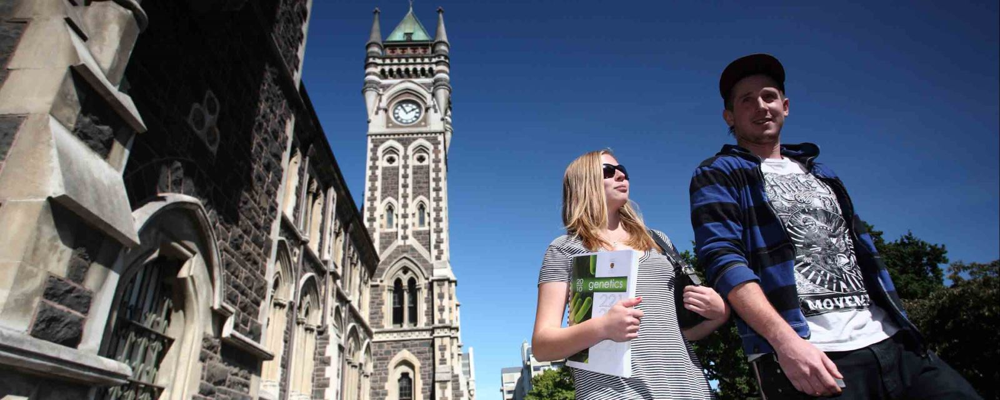

We Build Careers

كشور نيوزيلند در جنوب غربي اقيانوس پاسيفيك يعني در بين خط استوا و قطب جنوب و در حدود 1600 كيلومتري شرق استراليا قرار گرفته است. نزديكترين كشورها به نيوزيلند از طرف شمال عبارتند از: فيجي، تونگا و كاليدونياي جديد كه همگي آنها در حدود 1600 كيلومتري نيوزيلند قرار دارند. نيوزيلند از لحاظ وسعت همانند ژاپن، بريتانيا و ايتاليا است. نيوزيلند داراي دو جزيره اصلي است: جزيره شمالي و جزيره جنوبي. اين كشور حدود يكهزار سال پيش توسط مارونيها كشف شد كه اين طايفه از پُلينزي در جنوب پاسيفيك به نيوزيلند آمدند. چشمانداز نيوزيلند بخصوص از لحاظ كوهستاني بودن بسيار متنوع است. هر دو جزيره داراي زمينهاي حاصلخيز هستند و همينطور داراي جنگلهاي طبيعي و مصنوعي بزرگي هستند و سواحل ماسهاي زيادي در هر دو جزيره يافت ميشود و رودخانههاي پرآبي در اين دو جزيره در حال جريان هستند. منطقه شمال و جنوب نيوزيلند 1600كيلومتر از يكديگر فاصله دارند. جمعيت نيوزيلند حدود 7/3 ميليون نفر است و اكثريت جمعيت آن از اروپا و پلينزي ميباشند. با اينحال حدود 000/400 ماروني در نيوزيلند زندگي ميكنند و 4 درصد جمعيت چيني و 1درصد هندي هستند.
زبان رايج در نيوزيلند زبان انگليسي است و دومين زبان رسمي نيوزيلند ماروني ميباشد. نيوزيلند داراي منابع معدني مانند گاز طبيعي، نفت و ذغالسنگ ميباشد. سطح زندگي در نيوزيلند بالا ميباشد و مردم نيوزيلند صاحب خانه هستند و بيشتر خانوارها داراي ماشين، تلويزيون رنگي، تلفن، يخچال و ماشين لباسشوئي هستند. از لحاظ كيفيت زندگي تعداد كمي از كشورها ميتوانند با نيوزيلند رقابت كنند. هواي نيوزيلند تازه و تميز است و آب پاكيزه ميباشد و غذاي تازه به وفور يافت ميشود و شهرهاي بزرگ نيوزيلند بسيار امن است.
آب و هواي نيوزيلند تحت تأثير اقيانوس قرار ميگيرد كه نيوزيلند را محاصره كرده است. آب و هوا در نيوزيلند معتدل است و بيشتر نواحي نيوزيلند از تابش نور خورشيد برخوردار هستند و حركت جريان هوا از غرب به شرق باعث باد و باران ميگردد. در نيوزيلند فصول سال برعكس نيمكره شمالي است. در نيوزيلند ماه ژانويه گرمترين ماه سال است و ماه جولاي سردترين ماه سال ميباشد. در شمال كشور درجه حرارت هوا بيشتر است كه در تابستان گرماي نواحي زير استوائي را تجربه ميكند. در زمستان و در نواحي جنوبي آلپ و كوههاي مركزي جزيره شمالي بارش زياد برف را شاهد ميباشيم. در نواحي كم ارتفاع برف بندرت ميبارد و بيشتر در قسمت جنوبي جزيره شاهد بارش برف هستيم. خورشيد تابستان نيوزيلند بسيار سوزان ميباشد. نيوزيلند يك دموكراسي پارلماني دارد و عضو كشورهاي مشتركالمنافع ميباشد. رهبر رسمي نيوزيلند ملكه اليزابت دوم ميباشد كه ملكه نيوزيلند محسوب ميگردد و نماينده فرمانده كل نماينده ملكه محسوب ميشود. اعضاء پارلمان هر سه سال يكبار از طريق مشاركت مردم انتخاب ميشوند. كليه افراد بالاي 18سال نيوزيلند ميتوانند در انتخابات شركت كنند. نمايندگان پارلمان بالغ بر 120 نفر هستند كه از اين ميان 36 نفر آنان زن ميباشند، 14 نفر ماروني و سه نفر از اهالي پاسيفيك و يكنفر از اقليت چين ميباشد. نخستوزير رئيس دولت محسوب ميشود.
زيرساختار اقتصادي نيوزيلند بسيار محكم است. شبكههاي سرتاسري جادهها و خطوط قطار، مسافرت را در كشور آسان كرده است و دو خطوط هوائي داخلي در حال فعاليت هستند. يك دلار نيوزيلند حدود 65 سنت آمريكا است (آماري كه در آگوست1997 بدست آمده است). در مجموع اقتصاد نيوزيلند يك اقتصاد پويا و فعال ميباشد.
صنعت گردشگري در نيوزيلند بزرگترين منبع درآمد اين كشور محسوب ميگردد. در سال1996 صنعت گردشگري حدود 8/4 ميليارد دلار (نيوزيلند) براي اين كشور درآمد داشت. ساير صنايعي كه در نيوزيلند فعال هستند عبارتند از: جنگلداري و توليدات جنگل، ماهيگيري، كارخانههاي كودسازي و شيشه و غيره. صنايع سنگين نيوزيلند عبارتند از: كارخانه فولاد، ذوب، آلومينيوم و پالايشگاههاي نفت.
از لحاظ فرهنگي مردم نيوزيلند فعاليتهاي زيادي دارند و هنرمندان زيادي از نيوزيلند داراي معروفيت جهاني هستند. در مجموع كشور نيوزيلند از لحاظ سياسي و اقتصادي يك كشور باثبات و امن شناخته ميشود.
دولت نيوزيلند در زمينه بهداشت، آموزش و پرورش و امور رفاهي شهروندانش سرمايهگذاري سنگين كرده است. درمان بيمارستاني و خدمات زايمان و تعداد زيادي از داروها، از يارانههاي دولتي استفاده ميكنند و همينطور خدمات دندانپزشكي و خدمات عمومي پزشكي براي كودكان از كمكهاي دولتي استفاده مينمايند. آموزش و پرورش از دبستان تا دانشگاه ارائه ميگردد و تحصيل از سن 6 تا 16 سالگي اجباري ميباشد. بيشتر از 2300 دبستان و 330 دبيرستان نيوزيلند از پشتيباني دولت بهرهمند ميباشند و توسط هيئت امناء محلي اداره ميشوند و ساير مدارس از پشتيباني كليساها و بخش خصوصي برخوردار هستند. حدود 7 دانشگاه و 25 انستيتو فني و كالجهاي عمومي در سرتاسر كشور در حال فعاليت هستند كه سومين قسمت از تحصيلات (تحصيلات دانشگاهي) را ارائه ميكنند.
نظام آموزشي نيوزيلند:
نيوزيلند داراي يك نظام آموزشي بسيار عالي ميباشد و مدارك تحصيلي كه از دانشگاههاي نيوزيلند اخذ ميشود همطراز با بهترينها در جهان ميباشد. بيش از يكصد سال است كه نيوزيلند داراي يك نظام آموزش دولتي است كه در مقطع دبستان و دبيرستان رايگان و اجباري است.
مدارس داراي چهار ترم در سال هستند و قبل از شروع هريك از چهار ترم يك تعطيلي دو هفتهاي وجود دارد. تعطيلات تابستاني 6 هفته ميباشد.
ترم اول: از پايان ژانويه تا اوايل آوريل
ترم دوم: از پايان آوريل تا اوايل جولاي
ترم سوم: از اواسط جولاي تا اواسط سپتامبر
ترم چهارم: از آغاز اكتبر تا اواسط دسامبر
امتحان مدارس كه منجر به اخذ گواهينامه تحصيلي ميگردد بعد از 3سال تحصيل در دوره متوسطه برگزار ميگردد و بيشتر دانشآموزان در اين امتحانات شركت ميكنند كه اين معادل O Levelو A Levelانگليس ميباشد (سطح عادي و پيشرفته) گواهينامه مقطع ششم به دانشجوياني اعطاء ميگردد كه با موفقيت يك دوره 1ساله را در يك يا چند رشته به اتمام رساندهاند. اين مدرك معادل سال يازدهم مدارس آمريكا يا كانادا است.
گواهينامه دبيرستان به دانشجوياني اعطاء ميگردد كه در سال ششم پذيرفته شدهاند و بعد از آن توانستهاند كه سطح پيشرفته 2ساله را در حداقل 3 رشته با موفقيت بگذرانند.
امتحانات مربوط به كمك هزينه تحصيلي يا بورسيه معمولاً توسط دانشجويان دوره متوسطه در سال هفتم برگزار ميگردد. بورسيه يا كمك تحصيلي بر مبناي نتايج بدست آمده در اين امتحانات به دانشجويان اعطاء ميگردد.
مدارك خارجي معادل اين امتحان عبارتند از:
A Level انگليس (سطح پيشرفته)
مدرك سال دوازدهم آمريكا يا كانادا
سال 12 كه در ايالات مختلف استراليا بدست آمده باشد.
همانطور كه گفته شد 7 دانشگاه دولتي در نيوزيلند وجود دارد و همگي آنها در سطح بينالمللي شناخته شده هستند. هر كسي كه بتواند شرايط ورود به دانشگاه مورد نظر را بدست آورد ميتواند وارد اين دانشگاهها شود و در سطح دانشگاه دانشجويان ميتوانند در رشتههاي كارشناسي، كارشناسي ارشد و دوره دكتري ادامه تحصيل بدهند. داشتن مدرك دانشگاهي از نيوزيلند ميتواند راهگشاي تحصيلات بعدي در آمريكا و انگليس باشد.
در نيوزيلند 25 پليتكنيك وجود دارد كه 18 تاي آنها در جزيره شمالي و هفت تاي آنها در جزيره جنوبي واقع هستند. كالجهاي آموزش و پرورش (تربيتي) در اوكلند، ولينگتون، كرايست چرچ (Christ Church)و داندين وجود دارند كه به تربيت معلم و ساير گروهها مانند مددكاران اجتماعي ميپردازند.
براي آنكه به عنوان دانشجوي تمام وقت بخواهيد در يكي از دانشگاهها يا مراكز آموزش عالي نيوزيلند به تحصيل اشتغال ورزيد بايد فرم تقاضا را تكميل كرده و آنرا از طريق نمايندگان مجاز به دانشگاه مربوطه بفرستيد يا آنكه آنرا به كنسولگري نيوزيلند در كشورتان تسليم كنيد. همراه اين فرم بايد نسخههاي تأئيدشده از نتيجه امتحانات عمومي و مدرسه كه در 2سال اخير برگزار شده است و همينطور گواهينامههاي مربوط به آزمونهاي زبان انگليسي فرستاده شود.
اگر از خارج از نيوزيلند جهت ويزاي دانشجوئي اقدام ميكنيد شما ميبايستي مدارك لازم را بفرستيد. در كنسولگري نيوزيلند در كشورتان فرم تقاضا به شما داده ميشود. اين فرم را تكميل كرده و مدارك ذيل را نيز بايد تهيه كنيد:
1- گذرنامه ـ گذرنامه شما بايد براي مدتي كه ميخواهيد در نيوزيلند تحصيل كنيد معتبر باشد.
2- فرم تكميل شده درخواست صدور ويزاي دانشجوئي كه به امضاء دانشجو رسيده باشد همراه با يك عكس 4×3 و بايستي هزينه فرم تقاضاي ويزاي دانشجوئي را نيز بپردازيد كه اين هزينه قابل استرداد نميباشد.
3- پذيرش كتبي از دانشگاه مبني بر اينكه شما جهت ادامه تحصيل در يكي از دانشگاههاي نيوزيلند پذيرفته شدهايد.
4- رسيدي براي پرداخت هزينه دروس (قبل از تأئيد تقاضا مجبور نيستيد كه رسيد مربوطه را ارائه دهيد)
5- تضمين جهت اسكان يافتن در محل مناسب، يك اطمينان و ضمانت كتبي از جانب دانشگاه مربوطه يا هر فرد ديگري مبني بر آنكه يك محل مناسب براي اسكان شما در نيوزيلند فراهم است.
6- شواهدي دال بر اينكه در طول تحصيل منابع مالي كافي برايتان مهيا ميباشد.
7- شواهدي مبني بر توانائي شما جهت رفت و برگشت مستمر از نيوزيلند به كشورتان و بالعكس.
8- اگر بخواهيد بيشتر از 2سال در نيوزيلند تحصيل كنيد بايد گواهينامههاي ذيل را نيز ارائه دهيد:
(1) گواهيهاي تكميلشده و عكس از سينه و خدمات پزشكي اداره مهاجرت نيوزيلند
(2) اگر زير 17 سال باشيد 2 معرف بايد معرفي كنيد يا *گواهي عدم سوء پيشينه
ارائه تمام اين مدارك قبل از صدور ويزاي دانشجوئي ضروري ميباشند.
فهرست دانشگاههاي نيوزيلند و اطلاعات مختصري درباره هر يك از آنها.
دانشگاه MASSEY:
اين دانشگاه از لحاظ پذيرش دانشجو بزرگترين دانشگاه نيوزيلند محسوب ميشود. بيش از 32000 دانشجو در آن مشغول تحصيل هستند كه از اين ميان 930 دانشجوي خارجي از بيش از 60 كشور جهان هستند.
اين دانشگاه داراي 4 كالج عمده (كالج بازرگاني، تربيتي، علوم، علوم انساني و علوم اجتماعي) است و بيش از 56 دپارتمان آكادميك دارد. در اين دانشگاه دورههاي ديپلم، كارشناسي، كارشناسي ارشد و دكتري برگزار ميگردد.
شهريه سالانه براي دورههاي كارشناسي 10500 دلار نيوزيلند به بالا و براي دوره كارشناسي ارشد از 15500 دلار نيوزيلند به بالا ميباشد.
براي اطلاعات بيشتر به آدرس وبسايت اين دانشگاه مراجعه كنيد:
www.massey.ac.nz/-intlstud/
دانشگاه اوكلند (The University of Auckland) :
اين دانشگاه بزرگترين دانشگاه نيوزيلند محسوب ميشود و در سال1883تأسيس گرديد و 25500 دانشجو در آن مشغول تحصيل هستند. اين دانشگاه داراي 7 دانشكده ميباشد كه عبارتند از:
1- دانشكده معماري و برنامهريزي و هنرهاي زيبا (كه رشته معماري در دو قسمت ميباشد كه مجموعاً 5سال طول ميكشد و ليسانس ملك 3سال طول ميكشد و ليسانس برنامهريزي 4سال طول ميكشد)
2- دانشكده هنر (شامل موزيك و امور تربيتي): كارشناسي هنر يك دوره 3ساله است. ليسانس تربيتي 4سال است و دوره كارشناسي موزيك 3سال طول ميكشد.
3- دانشكده بازرگاني: دوره كارشناسي بازرگاني حداقل 3سال طول ميكشد و يك دوره 4ساله كارشناسي (امتياز عالي) نيز وجود دارد.
4- دانشكده مهندسي: دوره كارشناسي مهندسي 4سال طول ميكشد.
5- دانشكده حقوق: ليسانس حقوق يك دوره 4ساله است.
6- دانشكده علوم: دوره كارشناسي علوم يك دوره 3ساله است.
7- دانشكده الهيات: كه مدرك در الهيات را ارائه ميدهد.
همچنين دورههاي متنوع فوقليسانس نيز ارائه ميگردد.
براي اطلاعات بيشتر ميتوانيد به وبسايت دانشگاه مراجعه كنيد: www.auckland.ac.nz
دانشگاه اتاگو (University of Otago):
ر اين دانشگاه بيش از 16000 دانشجو مشغول تحصيل هستند. رشتههاي متنوع تحصيلي در اين دانشگاه ارائه ميگردد و دورههاي كارشناسي تا دكتري برگزار ميگردد. رشتههاي كارشناسي عبارتند از: علوم، بازرگاني، جهانگردي، علوم ا
نساني و بهداشت.
ر دوره كارشناسي ارشد تمام رشتهها تدريس ميگردد.
شهريه:براي بازرگاني 12000 دلار نيوزيلند ـ براي علوم انساني 11000 دلار نيوزيلند ـ براي بهداشت 18000-15000 دلار نيوزيلند و براي علوم 16000 –15000 دلار نيوزيلند.
شهريه رشتههاي فوقليسانس از 13000 تا 45000 دلار نيوزيلند متغير است. براي اطلاعات بيشتر ميتوانيد به وبسايت دانشگاه مراجعه كنيد: www.otago.ac.nz
انشگاه وايكاتو (The University of Waikato):
ين يك دانشگاه دولتي است و در سال1964 تأسيس گرديد. در سال1998 نزديك به 11000 دانشجو در اين دانشگاه مشغول تحصيل بودند كه از اين ميان 680 دانشجوي خارجي از 50 كشور جهان در اين دانشگاه به تحصيل اشتغال د
ا
شتند. اين دانشگاه 8 مدرسه دارد كه عبارتند از:
1- علوم رياضي و كامپيوتر
2- امور تربيتي
3- علوم انساني
4- حقوق
5- مديريت
6- توسعه پاسيفيك و ماروني
7- علوم و فنآوري
براي اطلاعات بيشتر ميتوانيد به وبسايت دانشگاه مراجعه كنيد: www.waikato.ac.nz
دانشگاه ويكتوريا در ولينگتون: (Victoria University of Wellington)
اين دانشگاه حدود يكصد سال پيش تأسيس گرديد و داراي اساتيد ماهر و باتجربهاي است. حدود 13000 دانشجو در ا
ين دانشگاه مشغول تحصيل هستند كه 10 درصد آنان را دانشجويان خارجي از بيش از 40 كشور جهان تشكيل ميدهد. ا
ين دانشگاه به ارائه دورههاي ذيل ميپردازد: كارشناسي هنر (BA)، كارشناسي معماري (BARCH)، كارشناسي علوم ساختمان
(BBSC)، كارشناسي بازرگاني و مديريت (BCA)، كارشناسي طراحي (BDES)، كارشناسي امور تربيتي (تدريس) (BED)، ك
ارشناسي حقوق (LIB)، كارشناسي موزيك(BMUS)، كارشناسي علوم (BSC)،كارشناسي علوم و فنآوري (BSC Tech)، ك
ارشناسي جهانگردي و خدمات مديريتي (BTSM).
در دوره كارشناسي ارشد اكثر رشتهها تدريس ميشود.
براي اطلاعات بيشتر به وبسايت دانشگاه مراجعه كنيد: www.vuw.ac.nz
دانشگاه لينكلن (Lincoln University):
در اين دانشگاه دورههاي كارشناسي، كارشناسي ارشد و دكتري ارائه ميگردد كه دورههاي كارشناسي 3ساله و 4ساله ا
ست و دوره كارشناسي ارشد 2ساله ميباشد و دوره دكتري 3ساله است.
وبسايت: www.lincoln.ac.nz
پست الكترونيكي دانشگاه: macraed@lincoln.ac.nz
دانشگاه كانتربري (University of Canterbury) :
در اين دانشگاه دورههاي كارشناسي، كارشناسي ارشد و دكتري ارائه ميگردد.
آدرس وبسايت دانشگاه: www.canterbury.ac.nz
شرايط عمومي ورود به دانشگاههاي نيوزيلند:
1- داشتن ديپلم كامل متوسطه با معدل قابل قبول
2- كسب نمره 550 در تافل يا نمره 6 در IELTS(زبان انگليسي)
3- موفقيت در مصاحبه
توجه:هر يك از دانشگاهها شرايط ورود منحصر به خود را دارند كه آنرا بايد از خود دانشگاهها پرسوجو كنيد.
انستيتو تكنولوژي Waiariki
اين انستيتو در سال1978 تأسيس گرديد و به يكي از بزرگترين انستيتوهاي نيوزيلند تبديل گرديد. در اين ا
نستيتو بيش از 6000 دانشجوي تماموقت و پارهوقت در 6 كمپ مشغول تحصيل هستند.
اين كمپها در: Rotorua, Taupo, Tokoroa, Whakatane قرار دارند.
تسهيلات و امكانات:
1- يافتن مسكن
2- مراقبت از كودكان
3- دسترسي آزاد به سوئيتهاي كامپيوتر
4- كتابفروشي
5- كافهتريا
6- كتابخانه
7- فتوكپي و چاپ رنگي
8- سالنهاي همايش
9- مجموعه ورزشي
10- سلماني
11- رستوران و بار
12- تعميرگاه اتومبيل
13- كنفرانس از راه ويدئو
14- كلاسهاي كوچك و مجهز (كه در هر كدام 10 تا 30 دانشجو مشغول تحصيل هستند)
برنامههاي تحصيلي:
يك برنامه تحصيلي معمولاً از چند درس، بخش يا واحد تشكيل شده است كه منجر به اخذ مدرك مانند گواهينامه، د
يپلم يا دانشنامه دانشگاهي ميگردد.
سطوح (Levels):
هر برنامه تحصيلي براساس يك سطح طبقهبندي شده است كه از 1 تا 7 ميباشد. هر چقدر كه سطح بالاتر باشد د
وره مربوطه به هوش و ذكاوت بيشتر احتياج خواهد داشت.
واحد:
هر واحد از 10 ساعت آموزشي تشكيل شده است. براي مثال، يك برنامه تحصيلي تماموقت 1ساله معرف 120 واحد خ
واهد بود.
د
ورههاي كوتاه و مباني:
اين دورهها منجر به اخذ هيچگونه مدرك رسمي نميگردد و معمولاً در سطوح پايينتر (4-1) وجود دارند. معذالك، اين ر
شتهها دانشجويان را براي برنامههاي تحصيلي بالاتر آماده ميسازد.
گواهينامهها:
واحدها يا دروس سطوح 1 تا 4 معمولاً بين 12 هفته و 1سال طول ميكشد. اعطاء گواهينامه به منزله مهارت در آن رشته ب
خصوص است. گواهينامه در سطوح 3 و 4 جهت وارد شدن به مشاغل خدماتي و تجاري مورد نياز است.
ديپلمها:
ديپلم از سطوح 5 تا 6 اعطاء ميگردد و معمولاً 1 يا 2 سال طول ميكشند. براي وارد شدن به مشاغل تجارت سطح عالي و
مشاغل حرفهاي و فني به اين ديپلمها احتياج است.
مدرك دانشگاهي:
مدرك كارشناسي كه حداقل 3سال طول ميكشد (بصورت تماموقت) و از سطح 5 تا 7 ميباشد. اخذ ليسانس باعث م
يشود كه دانشجو بتواند در دورههاي بالاتر مانند كارشناسي ارشد و دكتري شركت كند.
شهريه:
شهريه براي دانشجويان خارجي در هنگام ارائه تقاضا بدست ميآيد.
بورسيه:
امكانات اخذ بورسيه تحصيلي وجود دارد.
رشتههاي تحصيلي و مدارك اعطائي:
آ
شنايي با هنرهاي بصري:
مدرك اعطائي: گواهينامه Waiariki
سطح: 3
طول دوره: 12 هفته
نوع تحصيل: تمام وقت
تاريخ شروع دوره: ماه جولاي
شهريه: 1075 دلار نيوزيلند (اين شهريه براي افراد مقيم نيوزيلند است).
كمپ: Turang، Tokoroaو Whakatane
كد دوره تحصيلي: WR 2606
رشتههاي تحصيلي: هنر، عكاسي، طراحي، نقاشي، ترسيم، گرافيك كامپيوتري و غيره.
هنر:
مدرك : گواهينامه Waiariki
سطح: 4
طول دوره: 1 سال
نوع تحصيل: تماموقت
تاريخ شروع دوره: 10 فوريه
شهريه: 3412 دلار نيوزيلند (اين شهريه براي افراد مقيم نيوزيلند است)
كمپ:Rotorua
كد دوره تحصيلي: WR 2786
رشتههاي تحصيلي: طراحي، هنر، نقاشي، تحقيقات و ارتباطات، رسم، طراحي گرافيك، عكاسي، مجسمهسازي و غيره.
ديپلم در هنر و طراحي:
مدرك: ديپلم Waiariki
سطح: 6
طول دوره: 2 سال
نوع تحصيل: تماموقت
تاريخ شروع دوره: 10 فوريه
شهريه: 3412 دلار نيوزيلند (اين شهريه فقط براي افراد مقيم نيوزيلند است).
كمپ: Rotorua
كد دوره تصحيلي: WR 2793
رشتههاي تحصيلي: طراحي، هنر، نقاشي و نمايش، تحقيقات مستقل، گرافيك، عكاسي، سراميكسازي، مجسمهسازي و غ
يره.
شرايط ورود به دوره:
1- 17 ساله
2- داشتن حداقل 2 درس Bursary
يا گواهي فرم ششم با نمره 20
(مهندسي اتومبيل)
گواهينامه ملي براي ورود به صنعت اتومبيل:
مدرك: گواهينامه ملي
سطح: 2
طول دوره: 24 هفته
نوع تحصيل: تمام وقت
تاريخ شروع دوره: 10 فوريه و 21 جولاي
شهريه: 2187 دلار نيوزيلند (اين شهريه فقط براي افراد مقيم نيوزيلند است).
ساير هزينهها: هزينه براي لباس و كفش ايمني
كمپ: Rotorua
كد دوره تحصيلي: NC 2822
رشتههاي تحصيلي: سرويس بدنه اتومبيل، سرويس ترمزها، خدمات مشتري، روغنزني شاسي، سيستمهاي رانندگي، ا
لكترونيك و الكتريك، سيستم خنككننده موتور، سيستم احتراق و غيره.
شرايط ورود:
1- داشتن حداقل 3 سال دبيرستان
2- مهارت در انگليسي و رياضيات
3- موفقيت در مصاحبه
گواهينامه در مهندسي اتومبيل (الكتريك و جعبه دنده):
مدرك: گواهينامه Waiariki
سطح: 3
طول دوره: 17 هفته
نوع تحصيل: تماموقت
تاريخ شروع دوره: 10 فوريه
شهريه: 2095 دلار نيوزيلند (براي افراد مقيم)
ساير هزينهها: لباس و چكمههاي ايمني
كمپ: Rotorua
كد دوره تحصيلي: WR 2759
رشتههاي تحصيلي: سيستمهاي روشنائي ماشين، سيستمهاي خنككننده، سيستمهاي احتراق و ترمز، سيستمهاي ر
اهاندازي و شارژينگ و غيره.
شرايط ورود به دوره:
1- گواهينامه ملي ورود به صنعت اتومبيل
يا تجربه قبلي در تعمير ماشين
گواهينامه در مهندسي اتومبيل (الكترونيك و تعمير ماشين):
مدرك: گواهينامه Waiariki
سطح: 3
طول دوره: 17 هفته
نوع تحصيل: تماموقت
تاريخ شروع دوره: 21 جولاي
شهريه: 2095 دلار نيوزيلند (براي افراد مقيم)
ساير هزينهها: لباس و چكمههاي ايمني
كمپ: Rotorua
كد دوره تحصيلي: WR 2773
رشتههاي تحصيلي: ميزان كردن چرخها، تعمير مدارهاي الكترونيكي و سيمكشي اتومبيل، تميز كردن قسمتهاي م
ختلف ماشين، سيستم ترمز، هيدروليك سيستمهاي كنترل، قسمتهاي الكترونيك ماشين و غيره.
شرايط ورود:
1- داشتن گواهينامه ملي ورود به صنعت اتومبيل
يا داشتن تجربه قبلي در تعمير اتومبيل
2- موفقيت در مصاحبه
گواهينامه در مهندسي اتومبيل (عيبيابي، تعمير و مديريت):
مدرك: گواهينامه Waiariki
سطح: 4
طول دوره: 17 هفته
نوع تحصيل: تماموقت
تاريخ شروع دوره: 21 جولاي
شهريه: 2095 دلار نيوزيلند (براي افراد مقيم)
ساير هزينهها: لباس و چكمههاي ايمني
كمپ: Rotorua
كد دوره تحصيلي: WR 2779
رشتههاي تحصيلي: ضمانت و گارانتي اتومبيل، جعبههاي دنده دستي و مونتاژ ميله دندانهدار، عيبيابي، س
يستمهاي ترمز، سيستمهاي الكترونيكي احتراق و غيره.
شرايط ورود:
1- داشتن مدرك سطح3 يا تجربه قبلي در مهندسي اتومبيل
2- قبولي در مصاحبه
گواهينامه در مهندسي اتومبيل (خدمات اتومبيل و كنترل الكترونيك):
مدرك: گواهينامه Waiariki
سطح: 4
طول دوره: 17 هفته
نوع تحصيل: تماموقت
تاريخ شروع دوره: 10 فوريه
شهريه: 2095 دلار نيوزيلند (براي افراد مقيم)
ساير هزينهها: لباس و چكمههاي ايمني
كمپ: Rotorua
كد دوره تحصيلي: WR 2778
رشتههاي آموزشي: ارزشيابي ماشين، تشخيص عيب و تعمير آن، سيستمهاي سوخت بنزين كاربراتور، عيبهاي مربوط ب
ه فرمان و تعليق و غيره.
شرايط ورود:
1- پيشنياز سطح3 يا تجربه قبلي در مهندسي اتومبيل
2- قبولي در مصاحبه
مديريت بازرگاني:
افق جديد:
مدرك: گواهينامه Waiariki
سطح: 1-2
طول دوره: 18 هفته
نوع تحصيل: تماموقت
تاريخ شروع دوره: 10 فوريه و 21 جولاي
شهريه: 660 دلار نيوزيلند (براي افراد مقيم)
ساير هزينهها: هزينه كتاب 150 دلار و هزينه NZQA(مرجعي كه گواهينامه تحصيلي صادر ميكند)
25 دلار نيوزيلند
كمپ: Tokoroa، Taupo، Whakataneو Rotorua
كد دوره تحصيلي: WR 2627
رشتههاي تحصيلي: پردازش متن و سند، آشنائي با كامپيوتر، برنامههاي كاربردي مانند: صفحه گسترده، بانكهاي ا
طلاعاتي، واژهپردازي، مهارت در ارتباطات، مهارتهاي دفتري و غيره.
گواهينامه ملي در مديريت بازرگاني و كامپيوتر سطح 2:
مدرك: گواهينامه ملي
سطح: 2
طول دوره: 18 هفته
نوع تحصيل: تماموقت
تاريخ شروع دوره: 10 فوريه و 21 جولاي
شهريه: 1907 دلار نيوزيلند (براي افراد مقيم)
ساير هزينهها: شهريه NZQA 25 دلار و كتاب 300 دلار نيوزيلند
كمپ: Tokoroa، Taupo، Whakataneو Rotorua
كد دوره تحصيلي: WR 2751
رشتههاي تحصيلي: پردازش متون و اسناد، برنامههاي كامپيوتر (مانند صفحه گسترده، بانك اطلاعاتي، واژهپردازي، ا
ينترنت و غيره)، مهارتهاي ارتباطاتي، مهارتهاي دفتري و غيره.
گواهينامه ملي در مديريت بازرگاني و كامپيوتر سطح سوم:
مدرك: گواهينامه ملي
سطح: 3
طول دوره: 18 هفته
نوع تحصيل: تماموقت
تاريخ شروع دوره: 10 فوريه و 21 جولاي
شهريه: 1907 دلار نيوزيلند (براي افراد مقيم)
ساير هزينهها: هزينه صدور گواهينامه (NZQA= تأئيديه مقامات ذيصلاح نيوزيلند) 25 دلار و كتاب
300 دلار نيوزيلند
كمپ:Tokoroa، Taupo، Whakataneو Rotorua
كد دوره تحصيلي: WR 2620
رشتههاي تحصيلي: پردازش متون و اسناد، برنامههاي كامپيوتري (صفحه گسترده، بانك اطلاعاتي، واژهپردازي و غيره)
، مهارتهاي ارتباطاتي، مهارتهاي دفتري، بهداشت و ايمني.
شرايط ورود به دوره:
1- گواهينامه ملي در مديريت بازرگاني و كامپيوتر سطح دوم يا تجربه كاري
2- قبولي در مصاحبه
گواهينامه ملي در مديريت بازرگاني سطح چهارم:
م
درك: گواهينامه ملي
سطح: 4
طول دوره: 18 هفته
نوع تحصيل: تماموقت
تاريخ شروع دوره: 10 فوريه و 21 جولاي
شهريه: 1907 دلار نيوزيلند (براي افراد مقيم)
ساير هزينهها: هزينه صدور مدرك 25 دلار و كتاب 350 دلار نيوزيلند
كمپ: Tokoroa، Taupo، Whakataneو Rotorua
كد دوره تحصيلي: NC 5390
دورههاي تحصيلي: مديريت بازرگاني، پردازش متن و اسناد، كامپيوتر و فنآوري اطلاعات، ارتباطات
شرايط ورود:
1- گواهينامه ملي در مديريت بازرگاني و كامپيوتر سطح سوم يا تجربه كاري
2- قبولي در مصاحبه
گواهينامه ملي در خردهفروشي و عمدهفروشي سطح دوم:
مدرك: گواهينامه ملي
سطح: 2
طول دوره: 30 هفته
نوع تحصيل: پارهوقت (4 ساعت در هفته)
تاريخ شروع دوره: 10 فوريه
شهريه: 800 دلار نيوزيلند
كمپ: Whakataneو Rotorua
كد دوره تحصيلي: TBA
رشتههاي تحصيلي: خدمات مشتري، ايمني و بهداشت، تجارت
گواهينامه مديريت انستيتو نيوزيلند در رشته مديريت:
مدرك: گواهينامه NZIM
سطح: 4
طول دوره: 9 هفته
نوع تحصيل: پارهوقت
تاريخ شروع دوره: 10 فوريه، 28 آوريل، 21 جولاي و 6 اكتبر
شهريه: 277 دلار براي هر درس (براي افراد مقيم)
ساير هزينهها: كتب درسي
كمپ: Rotorua
كد دوره تحصيلي: PA 0855
گواهينامه مديريت انستيتو نيوزيلند در رشته مديريت:
مدرك: گواهينامه NZIM
سطح: 4
طول دوره: 16 هفته
نوع تحصيل: تمام وقت
تاريخ شروع دوره: 10 فوريه
شهريه: 1200 دلار نيوزيلند (براي افراد مقيم)
ساير هزينهها: كتب درسي
كمپ: Rotorua
كد دوره تحصيلي: PA 0855
رشتههاي تحصيلي: آشنائي با بازاريابي، منابع انساني، آشنائي با مديريت، آشنائي با كامپيوتر، مشكلزدائي و ت
صميمگيري وغيره
گواهينامه مديريت انستيتو نيوزيلند در مديريت شركتهاي كوچك تجاري:
مدرك: گواهينامه NZIM
سطح: 4
طول دوره: 36 هفته
نوع تحصيل: پاره وقت
تاريخ شروع: 10 فوريه
شهريه: 222 دلار براي هر درس
ساير هزينهها: كتب درسي
كمپ: Whakatane
كد دوره تحصيلي: WR 2738
گواهينامه Waiarikiدر تجارت:
مدرك: گواهينامه Waiariki
سطح: 4-6
طول دوره: 18 هفته براي هر درس
نوع تحصيل: پارهوقت (دوره تماموقت و درس خواندن درخانه نيز مهيا ميباشد).
تاريخ شروع دوره: 10 فوريه و 21 جولاي
شهريه: 500 دلار نيوزيلند براي هر درس و امتحان
ساير هزينهها: كتب درسي
كمپ:Whakatane، Tokoroa، Taupoو Rotorua
كد دوره تحصيلي: NC 5121
ديپلم نيوزيلند در تجارت:
مدرك: ديپلم نيوزيلند
سطح: 4-6
طول دوره: 18 هفته براي هر درس
نوع تحصيل: پارهوقت (دوره تمام وقت و درس خواندن در خانه نيز مهيا ميباشد).
تاريخ شروع دوره: 10 فوريه و 21 جولاي
شهريه: 500 دلار نيوزيلند براي هر درس (فقط براي افراد مقيم)
ساير هزينهها: كتب درسي
كمپ: Whakatane، Tokoroa، Taupoو Rotorua
كد دوره تحصيلي: NC 5121
رشتههاي تحصيلي: اصول حسابداري، آشنائي با حقوق تجارت، محيط اقتصادي، سازمانها و مديريت و غيره.
كارشناسي مديريت (سالهاي اول و دوم):
مدرك: ليسانس دانشگاه Waikato
سطح: 5-7
طول دوره: 4 سال (2 سال در Waiariki)
نوع تحصيل: تماموقت (دوره پارهوقت نيز موجود است).
تاريخ شروع دوره: 10 فوريه و 21 جولاي
شهريه: 500 دلار براي هر رشته (فقط براي افراد مقيم)
ساير هزينهها: كتب درسي
كمپ: Whakatane، Tokoroa، Taupoو Rotorua
كد دوره تحصيلي: NC 5121
رشتههاي تحصيلي: اصول حسابداري، آشنائي با حقوق تجارت، سازمان و مديريت، ارتباط تجاري، مفاهيم كامپيوتر، ا
صول بازاريابي و غيره.
شرايط ورود:
1- براي دانشجويان بالاي 20سال معيار انتخاب انعطافپذيرتر است و تحت تأثير تجربه كاري و انگيزه دانشجو م
يباشد.
2- قبولي در مصاحبه
آشپزي:
گواهينامه در حرفه تهيه غذا:
مدرك: گواهينامه Waiariki
سطح: 3
طول دوره: 1 سال
نوع تحصيل: تمام وقت
تاريخ شروع دوره: 10 فوريه و 21 جولاي
شهريه: 4242 دلار نيوزيلند (شامل يونيفورم آشپزخانه و رستوران)
ساير هزينهها: 300 دلار بابت چاقو و 90 دلار براي كتب درسي
كمپ: Rotorua
كد دوره تحصيلي: WR 2633
رشتههاي تحصيلي: غذاي سرد و گرم، كار آشپزخانه، اصول نانپزي، شيريني، تهيه كردن دسر غذا، ايمني غذا، كمك ا
وليه و غيره
شرايط ورود: قبولي در مصاحبه
گواهينامه در آشپزي و تهيه شيريني:
مدرك: گواهينامه Waiariki
سطح: 4
طول دوره: 1 سال
نوع تحصيل: تمام وقت
تاريخ شروع دوره: مارس
شهريه: 4311 دلار نيوزيلند (براي افراد مقيم)
ساير هزينهها: 170 دلار بابت كتب درسي
كمپ:Rotorua
كد دوره تحصيلي: WR 2653
رشتههاي تحصيلي و آموزشي: كارهاي آشپزخانه و خوراك سرد و گرم، اصول نانپزي و شيرينيپزي، مديريت آشپزخانه و
غيره.
شرايط ورود:
1- داشتن گواهينامه در تهيه غذا يا گواهينامه ملي در مهمانداري آشپزي سطح3.
ديپلم در هنر آشپزي ـ شيرينيپزي :
مدرك : ديپلم بينالمللي
سطح: 4
طول دوره: 20 هفته
نوع تحصيل: تماموقت
تاريخ شروع دوره: 28 ژانويه
شهريه: 3049 دلار شامل يونيفورم آشپزخانه (براي افراد مقيم)
ساير هزينهها: 300 دلار بابت چاقو و 170 دلار بابت كتب درسي
كمپ: Rotorua
كد دوره تحصيلي: WR 2785
شرايط ورود: قبولي در مصاحبه
گواهينامه ملي در مهمانداري، آشپزي سطح4:
مدرك: گواهينامه ملي
سطح: 4
طول دوره: 20 هفته
نوع تحصيل: تماموقت
تاريخ شروع دوره: 21 جولاي
شهريه: 2500 دلار نيوزيلند (براي افراد مقيم)
ساير هزينهها: كتب درسي، يونيفورم و چاقو تا 600 دلار
كمپ: Rotorua
كد دوره تحصيلي: TBA
شرايط ورود:
1- گواهينامه در مهمانداري ـ آشپزي سطح 3 يا تجربه كافي در امور آشپزي و آشپزخانه
2- موفقيت در مصاحبه
(كامپيوتر)
گواهينامه در كامپيوتر:
مدرك: گواهينامه Waiariki
سطح: 3
طول دوره: 18 هفته
نوع تحصيل: تمام وقت
تاريخ شروع دوره: 10 فوريه و 21 جولاي
شهريه: 1847 دلار نيوزيلند (براي افراد مقيم)
ساير هزينهها: كتب درسي 100 دلار
كمپ: Whakatane، Taupoو Rotorua
كد دوره تحصيلي: WR 2781
رشتههاي تحصيلي: سيستمهاي سختافزار و نرمافزار، واژهپردازي، بانك اطلاعاتي، صفحه گسترده، نرمافزار نمايش، ا
رتباطات كتبي، اينترنت و الكترونيك و برنامههاي حسابداري و غيره
گواهينامه در كامپيوتر:
مدرك: گواهينامه ملي
سطح: 3
طول دوره: 18 هفته
نوع تحصيل: تمام وقت
تاريخ شروع دوره: 10 فوريه و 21 جولاي
شهريه: 1882 دلار نيوزيلند (براي افراد مقيم)
ساير هزينهها: كتب درسي 100 دلار
كمپ: Tokoroa
كد دوره تحصيلي: NC 5213
رشتههاي تحصيلي: كار كردن با سيستم كامپيوتر شخصي، مديريت دادههاي كامپيوتري، استفاده از سيستمهاي ع
امل كامپيوتر شخصي و غيره.
گواهينامه ملي در كامپيوتر ـ امور تجاري:
مدرك: گواهينامه ملي
سطح: 5
طول دوره: 1 سال
نوع تحصيل: تمام وقت (پارهوقت نيز موجود است)
تاريخ شروع دوره: 10 فوريه و 21 جولاي
شهريه: 3742 دلار نيوزيلند (براي افراد مقيم)
ساير هزينهها: كتب درسي
كمپ: Whakatane، Taupoو Rotorua
كد دوره تحصيلي: NC 5187
رشتههاي تحصيلي: برنامههاي تجاري، ارتباطات تجاري، سازماندهي دادهها، اخلاق، مباني سختافزار و غيره
شرايط ورود به دوره:
1- ديپلم در رشته مربوط به كامپيوتر يا تجربه كاري
2- موفقيت در مصاحبه
ديپلم در كامپيوتر ـ امور تجاري:
مدرك: ديپلم ملي
سطح: 6
طول دوره: 1 سال
نوع تحصيل: تماموقت (پارهوقت نيز موجود است).
تاريخ شروع دوره: 10 فوريه و 21 جولاي
شهريه: 3655 دلار نيوزيلند (براي افراد مقيم)
ساير هزينهها: كتب درسي
كمپ: Rotorua
كد دوره تحصيلي: WR 2767
رشتههاي تحصيلي: برنامههاي تجاري، آناليز دادهها، بانك اطلاعات، ارتباطات دادهاي، اينترنت و غيره.
شرايط ورود به دوره:
1- گواهينامه در كامپيوتر ـ امور تجاري يا داشتن تجربه كاري
2- موفقيت در مصاحبه
كارشناسي سيستمهاي كامپيوتر (دوره جديد):
مدرك: دانشنامه UNITEC
سطح: 5-7
طول دوره: 3 سال
نوع تحصيل: تماموقت (پارهوقت نيز موجود است).
تاريخ شروع دوره: 10 فوريه
شهريه: 570 دلار براي هر برنامه (اين شهريه فقط براي افراد مقيم است)
ساير هزينهها: كتب درسي
كمپ: Rotorua
كد دوره تحصيلي: WR 2794
رشتههاي آموزشي: دادهها، سختافزار، سيستمهاي عامل، برنامهريزي، برنامههاي نرمافزاري، ارتباطات و سيستمهاي ت
جاري و غيره.
(مهندسي)
آشنائي با فنآوري مهندسي:
مدرك: گواهينامه Waiariki
سطح: 2
طول دوره: 18 هفته
نوع تحصيل: تماموقت
تاريخ شروع دوره: 10 فوريه و 21 جولاي
شهريه: 2097 دلار نيوزيلند (فقط براي افراد مقيم است).
ساير هزينهها: لباس، چكمههاي ايمني و عينكهاي محافظ
كمپ: Rotorua
كد دوره تحصيلي: SK 8195
رشتههاي آموزشي: محاسبات، رسم مهندسي CAD، تئوري مهندسي، كمك اوليه، جوشكاري و غيره.
شرايط ورود:
1- حداقل گذراندن 3 سال دوره متوسطه كه شامل: انگليسي، رياضيات، گرافيك، فنآوري كارگاهي و مهارت در محاسبه ا
عداد.
2- قبولي در مصاحبه
گواهينامه در جوشكاري:
مدرك: گواهينامه Waiariki
سطح: 2
طول دوره: 12 هفته
نوع تحصيل: تماموقت
تاريخ شروع دوره: ژانويه، آوريل و آگوست
شهريه: 2832 دلار نيوزيلند
كمپ: Rotorua
كد دوره تحصيلي: WR 2754
شرايط ورود: موفقيت در مصاحبه
گواهينامه در مهندسي (ساخت و سوار كردن):
مدرك: گواهينامه Waiariki
سطح: 2
طول دوره: 1 سال
نوع تحصيل: تمام وقت
تاريخ شروع دوره: 10 فوريه
شهريه براي افراد مقيم: 3800 دلار نيوزيلند
كمپ: Rotorua
كد دوره تحصيلي: TBA
شرايط ورود:
1- دانستن رياضيات و گرافيك و فنآوري فلزات
2- قبولي در مصاحبه
گواهي در مهندسي Millwrighting(نصب و ساختن ماشينآلات):
مدرك: گواهينامه Waiariki
سطح: 3
طول دوره: 2 سال
نوع تحصيل: تماموقت
تاريخ شروع دوره: 10 فوريه
شهريه براي افراد مقيم: 3700 دلار نيوزيلند
كمپ: Rotorua
كد دوره تحصيلي: TBA
رشتههاي تحصيلي: مهارتهاي عمومي مهندسي در زمينة نگهداري و تشخيص، تراشكاري، نصب، فرزكاري، جوشكاري و
غيره.
شرايط ورود:
1- رياضيات و گرافيك و فنآوري فلزات NCEA
2- موفقيت در مصاحبه
(زبان انگليسي)
گواهينامه در زبان انگليسي:
مدرك: گواهينامه Waiariki
طول دوره: از 1 روز تا 1 سال
نوع تحصيل: تمام وقت يا پاره وقت
تاريخ شروع دوره: هر هفته در زمان ترمهاي تحصيلي
شهريه: 3187 دلار براي افراد مقيم و 10500 دلار نيوزيلند براي دانشجويان خارجي.
كمپ: Rotorua
كد دوره تحصيلي: WR 2721
(مزرعهداري)
گواهينامه ملي در كشاورزي (محصولات لبني، گاو و گوسفند):
مدرك: گواهينامه ملي
سطح: 4
طول دوره: 2 سال براي گاو، 3 سال براي محصولات لبني
نوع تحصيل: پارهوقت (در روزهاي فراغت)
تاريخ شروع دوره: ژانويه و فوريه
شهريه: 410 دلار براي افراد مقيم
كمپ: Rotorua، Taupoو Rotorua
كد دوره تحصيلي: WRITO
گواهينامه ملي در مديريت Agribusiness(مديريت توليد):
مدرك: گواهينامه ملي
سطح: 4
طول دوره: 1 سال
نوع تحصيل: پارهوقت (در اوقات فراغت)
تاريخ شروع دوره: ژانويه و جولاي
شهريه: 500 دلار نيوزيلند براي افراد مقيم
كمپ:Waiariki
كد دوره تحصيلي: WRITO
گواهينامه مديريت گله:
مدرك: گواهينامه Waiariki
سطح: 4
طول دوره: 1 سال
نوع تحصيل: پارهوقت (در اوقات فراغت)
تاريخ شروع دوره: ژانويه
شهريه: 100 دلار نيوزيلند
كمپ: منطقه Waiariki
كد دوره تحصيلي: G6303
ديپلم ملي در مديريت Agribusiness:
مدرك: ديپلم ملي
سطح: 5
طول دوره: 2 سال
نوع تحصيل: پارهوقت (در اوقات فراغت)
تاريخ شروع دوره: ژانويه
شهريه: 50/687 دلار براي افراد مقيم
كمپ: Waiarikiو Rotorua
كد دوره تحصيلي: ND0647
اين دوره براي كساني طراحي شده است كه در مزرعه كار ميكنند و ميخواهند مدرك پيشرفته در مزرعهداري را كسب كنند.
(مد)
گواهينامه در فنآوري مد:
مدرك: گواهينامه Waiariki
سطح: 3
طول دوره: 1 سال
نوع تحصيل: آموزش در خانه (تماموقت نيز موجود است).
تاريخ شروع: هر زمان كه مايل باشيد.
شهريه: 2500 دلار براي افراد مقيم
كمپ: آموزش در خانه
كد دوره تحصيلي: WR 2771
رشتههاي آموزشي: طراحي، فنآوري البسه، امور طراحي، مواد خام و غيره
(جنگلداري)
گواهينامه ملي در جنگلداري (مديريت بازرگاني):
مدرك: گواهينامه ملي
سطح: 5
طول دوره: 1 سال
نوع تحصيل: آموزش در خانه
كد دوره تحصيلي: TBA
شرايط ورود به دوره: دارندگان ديپلم در علوم، رياضيات و انگليسي ارجهيت دارند.
رشتههاي آموزشي: امور مالي، بهداشت نيروي كار، توسعه و ايمني و غيره.
گواهينامه ملي در جنگلداري (مديريت عمليات):
مدرك: گواهينامه ملي
سطح: 5
طول دوره: 1 سال
نوع تحصيل: مطالعه در خانه
كد: TBA
رشتههاي آموزشي: مشخصات شغل، نقشه براي عمليات جنگلداري، نيازهاي محيط زيست، مسائل مربوط به استخدام، منابع و امور مالي، مفاهيم مديريت و غيره.
شرايط ورود به دوره:
1- داشتن ديپلم در علوم، رياضيات و دانستن زبان انگليسي ارجهيت دارد.
2- يا داشتن تجربه قبلي
ديپلم ملي در جنگلداري (مديريت جنگلداري):
مدرك: ديپلم ملي
سطح: 6
طول دوره: 5/2 سال
نوع تحصيل: تمام وقت
تاريخ شروع دوره: 10 فوريه
شهريه (براي افراد مقيم): سال اول 3937 دلار نيوزيلند
سال دوم 3637 دلار نيوزيلند
سال سوم 2355 دلار نيوزيلند
ساير هزينهها: كتب درسي، سياحت در جنگل (سال سوم)، كمربند و چكمههاي ايمني و عينكهاي محافظ
كد دوره تحصيلي: ND5334
رشتههاي آموزشي: ايمني، بهداشت و محيط زيست، لوايح مربوط به جنگلداري، اكولوژي جنگل، مديريت تغذيه، مديريت جنگلها، علم چوب، گياهشناسي، جنگلداري
فني و غيره.
شرايط ورود:
1- ديپلم در علوم، رياضيات و دانستن زبان انگليسي ارجهيت دارند.
يا تجربه كاري براي كساني كه فاقد مدرك علمي هستند.
(مهارتهاي عملي جنگلداري)
گواهينامه در مهارتهاي مربوط به درو و برداشت جنگل:
مدرك: گواهينامه Waiariki
سطح: 3
طول دوره: 25 هفته
نوع تحصيل: تماموقت
تاريخ شروع دوره: تاريخهاي متعدد
شهريه (براي افراد مقيم): 5400 دلار نيوزيلند شامل اره دندانه زنجيري و چرخ دنده ايمني
كمپ: FTCو همينطور در Kawerau، Taupo، Hawkes Bay، Northlandو Opotiki
كد دوره تحصيلي: WR 2797
رشتههاي آموزشي: ايمني اره دندانه زنجيري، تعمير و نگهداري اره دندانه زنجيري، دستورالعملهاي ايمني و كاربرد آنها، كندن درخت و غيره.
شرايط ورود به دوره:
1- داشتن سن 17 سال
2- توانائي جسماني كار كردن در جنگل
3- موفقيت در مصاحبه
گواهينامه در درو و برداشت جنگل:
مدرك: گواهينامه Waiariki
سطح: 4
طول دوره: 1 سال
نوع تحصيل: تماموقت
تاريخ شروع دوره: براساس تقاضا
شهريه (براي افراد مقيم): 5887 دلار نيوزيلند شامل اره دندانه زنجيري و چرخدنده ايمني
كمپ: FTCو همينطور در Opotikiو Hawkes Bay
كد دوره تحصيلي: WR 2768
گواهينامه در كندن كنده درخت بصورت عملي:
مدرك: گواهينامه Waiariki
سطح: 2
طول دوره: 16 هفته
نوع تحصيل: تمام وقت
تاريخ شروع دوره: در تاريخهاي متعدد
شهريه (براي افراد مقيم): 4397 دلار شامل اره دندانه زنجيري و چرخدنده ايمني
كمپ:FTCو همينطور در Taupo، Tepuke، Northland، Whakataneو Hawkes Bay
كد دوره تحصيلي: WR 2616
رشتههاي آموزشي: دستورالعمل مربوط به استفاده از اره دندانه زنجيري، ايمني اره دندانه زنجيري، جنگلداري تجاري در نيوزيلند، كمك اوليه و غيره.
شرايط ورود به دوره:
1- داشتن سن 17 سال
2- توانائي جسمي براي فعاليت در جنگل
3- قبولي در مصاحبه
گواهينامه كندهكشي:
مدرك: گواهينامه Waiariki
سطح: 3
طول دوره: 16 هفته
نوع تحصيل: تماموقت
تاريخ شروع دوره: در تاريخهاي متعدد
شهريه (براي افراد مقيم): 2100 دلار نيوزيلند
كمپ: FTC و ساير جنگلها در جزيره شمالي
كد دوره تحصيلي: WR 2783
آرايشگري:
گواهينامه در آرايشگري (سال اول و دوم):
مدرك: گواهينامه Waiariki
سطح: 2-4
طول دوره: 2 سال
نوع تحصيل: تماموقت
تاريخ شروع دوره: 10 فوريه
شهريه: براي سال اول 3937 دلار شامل وسايل آرايشگري و كتاب
سال دوم 3887 دلار شامل وسايل آرايشگري و كتاب
كمپ: Rotorua
كد دوره تحصيلي:WR 2770
رشتههاي آموزشي: مدل دادن به مو، رنگ زدن مو، كوتاه كردن مو، چگونگي ارتباط با مشتري، كمك اوليه و غيره
شرايط ورود به دوره:
سال اول: بوسيله مصاحبه
سال دوم: تكميل سال اول
رشته باغباني:
گواهينامه در باغباني:
مدرك: گواهينامه Waiariki
سطح: 3
طول دوره: 1 سال
نوع تحصيل: تماموقت
تاريخ شروع دوره: 10 فوريه
شهريه (براي افراد مقيم): 3177 دلار نيوزيلند
ساير هزينهها: كتب درسي 250 دلار، سفرهاي تحقيقاتي
كمپ: Rotorua
كد دوره تحصيلي: WR 2659
رشتههاي آموزشي: باغباني تزئيني، هرس، درختكاري و غيره
شرايط ورود به دوره:
1- داشتن 17 سال سن
2- تكميل كردن سال 11 بهتر است
3- قبولي در مصاحبه
گواهينامه در باغباني (تزئيني، چشمانداز و باغباني توليدي):
مدرك: گواهينامه Waiariki
سطح: 3
طول دوره: 1 سال
نوع تحصيل: تماموقت
تاريخ شروع دوره: 10 فوريه
شهريه (براي افراد مقيم): 3500 دلار نيوزيلند
كمپ: Whakatane
كد دوره تحصيلي: TBA
رشتههاي آموزشي: گياهشناسي، باغباني توليدي، تزئين و چشمانداز (ساختن منظره) و غيره
شرايط ورود به دوره:
1- حداقل تكميل 3 سال متوسطه يا معادل آن يا تجربه كاري
2- حداقل 17 سال
3- توانائي جسمي جهت تكميل دوره
4- موفقيت در مصاحبه
گواهينامه در باغباني (توليد ميوه):
مدرك: گواهينامه Waiariki
سطح: 3
طول دوره: 1 سال
نوع تحصيل: تماموقت
تاريخ شروع دوره: 10 فوريه
شهريه (براي افراد مقيم): 3500 دلار نيوزيلند
ساير هزينهها: لباس، چكمه و باراني
كمپ: Rotorua
كد دوره تحصيلي: TBA
دورههاي آموزشي: توليد ميوه در نيوزيلند، خاكشناسي، گياهشناسي، پرورش نهال و غيره.
شرايط ورود به دوره:
1- حداقل تكميل دوره 3 ساله متوسطه يا معادل آن يا تجربه كاري
2- داشتن حداقل 17 سال
3- توانائي جسمي براي تكميل دوره
4- موفقيت در مصاحبه
مهمانداري:
گواهينامه در خدمات مواد غذائي و آشاميدني:
مدرك: گواهينامه Waiariki
سطح: 3
طول دوره تحصيلي: 18 هفته
نوع تحصيل: تماموقت
تاريخ شروع دوره: 10 فوريه و 21 جولاي
شهريه: 2112 دلار نيوزيلند (شامل پيراهن مخصوص رستوران)
ساير هزينهها: شلوار مشكي يا دامن
كمپ: Rotorua
كد دوره تحصيلي: WR 2692
رشتههاي آموزشي: غذا، شراب، مهارتهاي مربوط به خدمات مشتري، امور توريستي، كمك اوليه، ايمني غذا و غيره.
شرايط ورود به دوره:
1- داشتن 18 سال كامل
2- قبولي در مصاحبه
گواهينامه در جهانگردي و مهمانداري:
مدرك: گواهينامه Waiariki
سطح: 2-3
طول دوره: 1 سال
نوع تحصيل: تماموقت
تاريخ شروع دوره: 24 فوريه
شهريه (براي افراد مقيم): 3697 دلار نيوزيلند (شامل پيراهن مخصوص رستوران)
ساير هزينهها: شلوار مشكي يا دامن
كمپ: Tokoroaو Whakatane
كد دوره تحصيلي: WR 2628
رشتههاي آموزشي: مهارتهاي مربوط به خدمات مشتري، مطالعات جهانگردي، آگاهي و بينش فرهنگي، ايمني غذا، كمك اوليه، خدمات غذائي و آشاميدني و غيره.
شرايط ورود به دوره:قبولي در مصاحبه
ديپلم در مديريت مهمانداري:
مدرك: ديپلم Waiariki
سطح: 5
طول دوره: 2 سال
نوع تحصيل: تماموقت
تاريخ شروع دوره: 10 فوريه و 21 جولاي
شهريه: سال اول 4132 دلار شامل يونيفورم، سال دوم 3737 دلار
ساير هزينهها: سال اول كارد و چنگال و كتب درسي 490 دلار، شلوار مشكي يا دامن
سال دوم: كتب درسي 160 دلار نيوزيلند
كمپ: Rotorua
كد دوره تحصيلي: PA 0719
ر
شتههاي آموزشي:
سال اول: آشپزي حرفهاي، خدمات رستوران، خدمات بار، خانهداري، ايمني غذا و غيره
سال دوم: مديريت مهمانداري، مطالعه شراب، حسابداري، بازاريابي
شرايط ورود به دوره:
1- داشتن حداقل 17 سال
2- موفقيت در مصاحبه
(طراحي داخلي)
گواهينامه در طراحي داخلي:
مدرك: گواهينامه Waiariki
سطح: 4
طول دوره: 1 سال
نوع تحصيل: تماموقت
تاريخ شروع دوره: 10 فوريه
شهريه (براي افراد مقيم): 3412 دلار نيوزيلند
كمپ: Rotorua
كد دوره تحصيلي: WR 2770
رشتههاي آموزشي: طراحي، رسم، تئوري و غيره
شرايط ورود:
2- تكميل دوره چهارساله دبيرستان
3- گواهي در هنر يا 6 نمونه از منابع طراحي داخلي
برنامههاي مقدماتي:
آشنائي با دوره دانشگاهي:
مدرك: گواهينامه Waiariki
سطح: 2
طول دوره: 19 هفته
نوع تحصيل: تماموقت
تاريخ شروع دوره: 10 فوريه و 21 جولاي
شهريه (براي افراد مقيم): 50/1212 دلار نيوزيلند
ساير هزينهها: كتب درسي
كمپ: Rotorua
كد دوره تحصيلي: WR 2775
رشتههاي تحصيلي: مهارتهاي مطالعه، شمارش اعداد، مهارتهاي ارتباطاتي، كامپيوتر و غيره
هيئت حفظ منابع طبيعي نيوزيلند:
مدرك: گواهينامه Waiariki
سطح: 1-2
طول دوره: 20 هفته
نوع تحصيل: تماموقت
تاريخ شروع دوره: ژانويه و جولاي
شهريه: ندارد
كمپ: Rotorua
كد دوره تحصيلي: G92031
اگر بين 16 تا 25 سال سن داريد و ميخواهيد راهنمائيهائي در زندگي اخذ كنيد آنوقت اين دوره براي شما ايدهآل ميباشد. شما ميتوانيد مهارتهاي زندگي را در ا
ين دوره ياد بگيريد و فرا ميگيريد كه چگونه مهارتهاي شغلي را كسب كنيد.
مدرسه تابستاني ـ مهارتهاي مربوط به مطالعه دروس:
طول دوره: 4 روز
نوع تحصيل: تماموقت
تاريخ شروع دوره: 3 فوريه
شهريه: 25 دلار نيوزيلند
كمپ: Rotorua
كد دوره تحصيلي: ASROG 9999
رشته خبرنگاري:
گواهينامه ملي در خبرنگاري (رشته مقدماتي):
مدرك: گواهينامه ملي
سطح: 3
طول دوره: 18 هفته
نوع تحصيل: تماموقت
تاريخ شروع دوره: 21 جولاي
شهريه: 1076 دلار نيوزيلند
ساير هزينهها: كتب درسي
كمپ: Rotorua
كد دوره تحصيلي: TBA
رشتههاي آموزشي: اطلاعاتي درباره رسانههاي چاپي، تحقيق درباره داستانهاي خبري، مصاحبه كردن با افراد مختلف
ديپلم در خبرنگاري ـ چاپ :
مدرك: ديپلم Waiariki
سطح: 5
طول دوره: 2 سال
نوع تحصيل: تماموقت
تاريخ شروع دوره: 10 فوريه
شهريه (براي افراد مقيم): 4787 دلار نيوزيلند
ساير هزينهها: كتب درسي
كمپ: Rotorua
كد دوره تحصيلي: WR 2782
رشتههاي آموزشي: سال اول: مباني داستانهاي خبري، طنزنويسي براي خبرنگاران، مهارتهاي فني براي خبرنگار، عكاسي، طراحي و صفحهآرائي و غيره.
سال دوم: نوشتن خبر، جمعآوري خبر، قانون، پليس، دادگاه و اخلاق رسانهاي، دولت محلي و غيره.
شرايط ورود:
1- گواهينامه ملي در خبرنگاري (مقدماتي)
2- يا دانشجويان ميتوانند از دبيرستان، دانشگاه و غيره مستقيماً وارد اين دوره شوند.
3- موفقيت در مصاحبه
مطالعه مارونيها:
گواهينامه در مطالعه مارونيها:
مدرك: گواهينامه Waiariki
سطح: 4
طول دوره: 1 سال
نوع تحصيل: تماموقت
تاريخ شروع دوره: 10 فوريه
شهريه: ندارد
ديپلم در مطالعه مارونيها:
مدرك: ديپلم Waiariki
سطح: 5-6
طول دوره: 2 سال
نوع تحصيل: پارهوقت
تاريخ شروع دوره: 10 فوريه
شهريه: 3187 دلار نيوزيلند
كارشناسي مطالعه مارونيها:
مدرك: كارشناسي Waiariki
سطح: 5-7
طول دوره: 3 سال
نوع تحصيل: تماموقت
تاريخ شروع دوره: 10 فوريه
شهريه: 3667 دلار نيوزيلند
كد دوره تحصيلي:WR 2750
پرستاري و بهداشت:
كارشناسي پرستاري براي پرستاران ثبتشده:
مدرك: كارشناسي Waiariki
سطح: 5
طول دوره: 2 تا 6 سال (بستگي به تعداد دروس و امتحانات دارد)
نوع تحصيل: آموزش در خانه (تماموقت نيز موجود است)
تاريخ شروع دوره: هر زمان كه دانشجو بخواهد.
شهريه: 75/613 دلار براي هر امتحان
كمپ: مطالعه در خانه
كد دوره تحصيلي: WR 2752
اگر شما پرستار ثبتشده هستيد و ميخواهيد مدرك دانشگاهي خود را دريافت كنيد آنوقت اين دوره براي شما مناسب خواهد بود.
كارشناسي پرستاري:
مدرك: كارشناسي Waiariki
سطح: 5-7
طول دوره: 3 سال
نوع تحصيل: تماموقت
تاريخ شروع دوره: 10 فوريه
شهريه: 4062 دلار نيوزيلند
ساير هزينهها: كتب درسي تا 650 دلار، يونيفورم 120 دلار
كمپ: Rotorua
كد دوره تحصيلي: WR 2732
رشتههاي آموزشي: علم و هنر پرستاري، تحقيقات، هنر و علوم انساني، فيزيك و زيستشناسي و غيره.
شرايط ورود به دوره:
1- داوطلب بايد بيش از 17سال سن داشته باشد.
2- داشتن ديپلم دوره متوسطه
3- داشتن نمره 5/6 در IELTS(زبان انگليسي)
4- موفقيت در مصاحبه
گواهينامه در كنترل عفونت:
مدرك: گواهينامه Waiariki
سطح:4
طول دوره: 1 سال
نوع تحصيل: مطالعه در خانه
تاريخ شروع دوره: 10 فوريه و 21 جولاي
شهريه: 1750 دلار
كمپ: مطالعه در خانه يا Rotorua
كد دوره تحصيلي: WR 2788
براي كساني كه ميخواهند اطلاعات بيشتري درباره چگونگي كنترل عفونت داشته باشند.
گواهينامه براي آسيستان مراقبتهاي بهداشتي:
مدرك: گواهينامه Waiariki
سطح: 3
طول دوره: 18 هفته
نوع تحصيل: تمام وقت
تاريخ شروع دوره: 10 فوريه و 21 جولاي
شهريه: 76/1076 دلار (براي افراد مقيم)
ساير هزينهها: كتب درسي 84 دلار، بيمه 20 دلار
كمپ: Rotorua
كد دوره تحصيلي: TBA
اين دوره براي كساني مناسب است كه ميخواهند مهارتها و دانش لازم را براي كار كردن در محيط بيمارستان، مراقبت از بيماران در خانه و غيره كسب كنند.
شرايط ورود به دوره:
1- حداقل داشتن 17 سال سن
2- موفقيت در مصاحبه
علوم اجتماعي:
گواهينامه ملي در بهداشت رواني :
مدرك: گواهينامه ملي
سطح: 4
طول دوره: 1 سال
نوع تحصيل: تماموقت
تاريخ شروع دوره: 10 فوريه
شهريه براي افراد مقيم: 3579 دلار نيوزيلند
كمپ: Whakatane
كد دوره تحصيلي: NC 5602
اين دوره براي كساني مناسب است كه ميخواهند به كساني كه دچار بيماريهاي رواني هستند كمك كنند.
گواهينامه ملي در خدمات انساني:
مدرك: گواهينامه ملي
سطح: 4
طول دوره: 1 سال
نوع تحصيل: تماموقت
تاريخ شروع دوره: 10 فوريه
شهريه براي افراد مقيم: 3377 دلار
ساير هزينهها: 150 دلار براي صدور مدرك
كمپ: Tokoroa
كد دوره تحصيلي: NC 5255
اين برنامه براي كساني مناسب است كه ميخواهند افراد دچار معلوليت را حمايت كنند و به آنها كمك نمايند.
شرايط ورود به دوره: موفقيت در مصاحبه
گواهينامه در مددكاري اجتماعي:
مدرك: گواهينامه Waiariki
سطح: 4
طول دوره: 1 سال
نوع تحصيل: تماموقت
تاريخ شروع دوره: 10 فوريه
شهريه براي افراد مقيم: 3848 دلار نيوزيلند
ساير هزينهها: 100 دلار براي سفرهاي پژوهشي
كمپ: Rotorua
كد دوره تحصيلي: WR 2703
شرايط ورود به دوره: موفقيت در مصاحبه
گواهينامه در مددكاري اجتماعي و جامعه:
مدرك: گواهينامه Waiariki
سطح: 4
طول دوره: 1 سال
نوع تحصيل: تماموقت
تاريخ شروع دوره: 10 فوريه
شهريه براي افراد مقيم: 3351 دلار
ساير هزينهها: 100 دلار براي سفرهاي تحقيقي
كمپ: Whakatane، Tokoroa، Taupoو Rotorua
كد دوره تحصيلي: WR 2731
اين برنامه به دانشجويان دانش و مهارتهاي لازم را براي كار كردن بعنوان مددكار اجتماعي در زمينههاي مختلف اعطاء ميكند.
شرايط ورود به دوره: موفقيت در مصاحبه
كارشناسي كاربردي علوم اجتماعي:
مدرك: كارشناسي Waiariki
سطح: 5-7
طول دوره: 3 سال
نوع تحصيل: تماموقت
تاريخ شروع دوره: 10 فوريه
شهريه: 75/3952 ـ 75/4452 دلار نيوزيلند
ساير هزينهها: كتب درسي
كمپ: Rotorua
كد دوره تحصيلي: WR 2780
فارغالتحصيلان اين دوره از دانش و مهارتهاي كافي و ضروري جهت كار بعنوان مددكار اجتماعي در زمينههاي خدمات اجتماعي و مددكاري اجتماعي برخوردار خواهند شد.
شرايط ورود به دوره:
1- گواهينامه مددكاري اجتماعي و جامعه
يا گواهينامه در مددكاري اجتماعي
2- قبولي در مصاحبه
ورزش
گواهينامه در ورزش، تندرستي و تفريحات سالم:
مدرك: گواهينامه Waiariki
سطح: 3-4
طول دوره: 1 سال
نوع تحصيل: تمام وقت
تاريخ شروع دوره: 10 فوريه
شهريه براي افراد مقيم: 75/3631 دلار نيوزيلند
ساير هزينهها: 332 دلار براي صدور مدرك
كمپ: Whakataneو Rotorua
كد دوره تحصيلي: WR 2654
تدريس
گواهينامه در تدريس بزرگسالان:
مدرك: گواهينامه Waiariki
سطح: 4
طول دوره: 140 ساعت
نوع تحصيل: پاره وقت
شهريه: 512 دلار نيوزيلند
كد دوره تحصيلي: G 14081
گواهينامه در تدريس و فراگيري بزرگسالان (سطح4):
مدرك: گواهينامه Waiariki
سطح: 4
طول دوره: 600 ساعت، 9 درس
نوع تحصيل: پاره وقت
شهريه: 355 دلار براي هر درس
كد دوره تحصيلي: WR 2774
ديپلم تدريس، آموزش كودكان در مراحل اوليه زندگي:
مدرك: ديپلم Waiariki
سطح: 5-7
طول دوره: 3 سال
نوع تحصيل: تمام وقت
تاريخ شروع دوره: 10 فوريه
شهريه: 3755 دلار
ساير هزينهها: كتب درسي
كمپ: Gisborne، Whakatane، Taupoو Rotorua
كد دوره تحصيلي: WR 2757
اگر دوست داريد كه ذهن كودكان را توسعه دهيد آنوقت ميبايستي معلم دوران كودكي شويد.
شرايط ورود به دوره:
1- ديپلم
2- تجربه كاري
مديريت جهانگردي
ديپلم در جهانگردي:
مدرك: ديپلم Waiariki
سطح: 5
طول دوره: 1 سال
نوع تحصيل: مطالعه در خانه
شهريه: حدود 5500 دلار
سايز هزينهها: لباس براي بيرون، غذا و هزينه سفر
كمپ: Rotorua
كد دوره تحصيلي: WR 2792
ديپلم در مديريت جهانگردي:
مدرك: ديپلم Waiariki
سطح: 5-7
طول دوره: 2-3 سال
نوع تحصيل: تمام وقت و مطالعه در خانه
تاريخ شروع دوره: 10 فوريه و 21 جولاي
شهريه: 500 دلار براي هر امتحان يا 3667 دلار تمام وقت
ساير هزينهها: كتب درسي تا 800 دلار
كمپ: Rotorua
كد دوره تحصيلي: WR 2753
اين ديپلم كه چكيدهاي از مدرك كارشناسي مديريت جهانگردي است براي آنهائي مناسب ميباشد كه از تجربه كافي در صنعت توريسم برخوردار هستند و مايل ه
ستند در حين تحصيل كار هم بكنند.
كارشناسي در مديريت توريسم:
مدرك: كارشناسي Waiariki
سطح: 5-7
طول دوره: 3 سال
نوع تحصيل: تمام وقت
تاريخ شروع دوره: 10 فوريه و 21 جولاي
شهريه: 4117 تمام وقت
ساير هزينهها: كتب درسي
كمپ: Rotorua
كد دوره تحصيلي: WR 2723
اين اولين مدرك كارشناسي در توريسم است كه در نيوزيلند ارائه ميگردد. اين دوره فارغالتحصيلان را براي كار در بزرگترين صنعت دنيا يعني جهانگردي آماده م
يسازد.
ر
اهنماي جهانگردان
گواهينامه در راهنماي جهانگردان:
مدرك: گواهينامه Waiariki
سطح: 4
طول دوره: 1 سال
نوع تحصيل: تمام وقت
تاريخ شروع دوره: 10 فوريه
شهريه: 3665 دلار شامل يونيفورم و كتب درسي
كمپ: Rotorua
كد دوره تحصيلي: WR 2697
گواهينامه در امور جهانگردي:
مدرك: گواهينامه Waiariki
سطح: 4
طول دوره: 1سال
نوع تحصيل: تمام وقت
تاريخ شروع دوره: 10 فوريه
شهريه: 4803 دلار نيوزيلند
كمپ: Rotorua
كد دوره تحصيلي: WR 2622
ديپلم در ماجراجوئيهاي جهانگردي:
مدرك: ديپلم Waiariki
سطح: 5
طول دوره: 1 سال
نوع تحصيل: تمام وقت
تاريخ شروع دوره: 10 فوريه
شهريه: 5767 دلار
ساير هزينهها: كتب درسي 320 دلار نيوزيلند
كمپ: Rotorua
كد دوره تحصيلي: WR 2784
اگر ميخواهيد يك راهنماي خوبي در امور هيجانانگيز توريسم باشيد اين رشته براي شما مناسب است. شما ميتوانيد مهارت لازم را در هدايت بلم و شناور شدن
بر روي دريا را كسب كنيد.
شرايط ورود به دوره:
1- گواهينامه امور جهانگردي
2- موفقيت در مصاحبه
سير و سياحت
گواهينامه در جهانگردي:
مدرك: گواهينامه Waiariki
سطح: 2
طول دوره: 18 هفته
نوع تحصيل: تمام وقت
تاريخ شروع دوره: 21 جولاي
شهريه: 495 دلار
ساير هزينهها: 55 دلار براي پيراهن رستوران، شلوار مشكي يا دامن
كمپ: Tokoroaو Rotorua
كد دوره تحصيلي: WR 2745
گواهينامه در جهانگردي و سير و سياحت:
مدرك: گواهينامه Waiariki
سطح: 3
طول دوره: 1 سال
نوع تحصيل: تمام وقت
تاريخ شروع دوره: 10 فوريه
شهريه: 3872 دلار
كمپ: Rotorua
كد دوره تحصيلي: WR 2755
اين دوره شما را با صنعت جهانگردي و سفر آشنا ميسازد و درباره ذخيره جا در هتل و برخورد با جهانگردان و غيره اطلاعات خوبي به شما ميدهد.
گواهينامه ملي در سفر (سطح 4):
مدرك: گواهينامه ملي
سطح: 4
طول دوره: 18 هفته
نوع تحصيل: تمام وقت
تاريخ شروع دوره: 10 فوريه
شهريه: 1842 دلار
كمپ: Rotorua
كد دوره تحصيلي: NC 5243
اين دوره براي كساني كه ميخواهند در آژانس مسافرتي كار كنند بسيار مفيد است.
مديريت پردازش چوب
گواهينامه در پردازش چوبهاي محكم:
مدرك: گواهينامه Waiariki
سطح: 3
طول دوره: 1 سال
نوع تحصيل: تمام وقت
تاريخ شروع دوره: 10 فوريه
شهريه: 3587 دلار
كد دوره تحصيلي: WR 2763
ديپلم ملي در فنآوري پردازش چوب:
مدرك: ديپلم ملي
سطح: 5
طول دوره: 1 سال
نوع تحصيل: آموزش در خانه
تاريخ شروع دوره: فوريه در جزيره شمالي و آوريل در جزيره جنوبي
شهريه: 3700 دلار
كد دوره تحصيلي: ND 0753
گواهينامه در نگهداري اره و ماشين ارهكشي:
مدرك: گواهينامه Waiariki
سطح: 3
طول دوره: 1 سال
نوع تحصيل: تمام وقت
تاريخ شروع دوره: 10 فوريه
شهريه: 3587 دلار نيوزيلند
ساير هزينهها: چكمههاي ايمني، حفاظ گوش
كد دوره تحصيلي: WR 2764
گواهينامه در تراشكاري الوار:
مدرك: گواهينامه Waiariki
سطح: 3
طول دوره: 1 سال
نوع تحصيل: تمام وقت
تاريخ شروع دوره: 10 فوريه و 21 جولاي
شهريه: 3587 دلار
ساير هزينهها: چكمههاي ايمني، حفاظ گوش
كد دوره تحصيلي: WR 2765
گواهينامه در درجهبندي كردن الوار:
مدرك: گواهينامه Waiariki
سطح: 3
طول دوره: 1 سال
نوع تحصيل: تمام وقت
تاريخ شروع دوره: 10 فوريه
شهريه: 3587 دلار
ساير هزينهها: چكمههاي ايمني، حفاظ گوش
كد دوره تحصيلي: WR 2760
براي اطلاعات بيشتر ميتوانيد به وبسايت Waiarikiمراجعه كنيد:
www.waiariki.ac.nz
آ
درس:
Mokoia Campus, Private Bag 3028, Rotorua, New Zealand
تلفن: 8712 346-7-64+
فاكس: 8721 346-7-64+
international@waiariki.ac.nz:پست الكترونيكي
انستيتو تكنولوژي Waikato
انستيتو تكنولوژي وايكاتو در مركز شهر هاميلتون قرار گرفته است و به مركز خريد نزديك ميباشد. اين انستيتو يكي از بزرگترين پليتكنيكها در ن
يوزيلند ميباشد و رشتههاي متنوع تحصيلي ارائه ميدهد. كليه اين رشتهها مورد تأئيد مسئولين آموزش عالي نيوزيلند است و در سطح جهان معتبر ميباشد.
هدف اصلي انستيتو تكنولوژي وايكاتو ارائه آموزش حرفهاي با كيفيت بسيار بالا است كه برمبناي مهارتهاي انفرادي قرار دارد. اين انستيتو داراي مدرسان م
اهر و با تجربه در زمينه تخصصي خويش ميباشند. براي دانشجويان خارجي كلاسهاي تقويتي زبان انگليسي داير ميباشد.
تسهيلات و امكانات:
كمپ ورزشي و تفريحي مجهز كه در آن واليبال، بدمينتون، تنيس روي ميز، بسكتبال، فوتبال داخل سالن را ميتوان بازي كرد و همينطور يك محل پرورش ا
ندام نيز موجود است.
كلاسهاي درس مدرن همراه با سالنهاي سخنراني و آموزش و آزمايشگاه
دسترسي رايگان و 24 ساعته به اينترنت و كامپيوتر
كمك به دانشجويان خارجي در كليه زمينهها
دسترسي آسان انستيتو به مركز خريد و نزديك به سواحل زيبا و جذابيتهاي توريستي اوكلند.
استقبال از دانشجو در فرودگاه و انتقال دانشجو به محل سكونت
مشاوره در امر مسكن و پيدا كردن خانواده مناسب براي اسكان دانشجو
انجام برنامههاي راهنمائي براي آشنائي بيشتر دانشجويان با محيط اطراف
اطاقهاي عمومي براي دانشجويان خارجي در باشگاههاي بينالمللي
اطاقهاي مخصوص دعا و انجام مراسم مذهبي
مزاياي تحصيل در انستيتو تكنولوژي وايكاتو:
اين انستيتو دولتي است.
رشتههاي تحصيلي اين انستيتو مورد تأئيد دولت و وزارت آموزش عالي نيوزيلند است و در سطح بينالمللي از اعتبار زيادي برخوردار است.
مدرسان ماهر و باتجربه كه به امر آموزش مشغول هستند.
اطلاعات مختصري درباره شهر هاميلتون:
همانطور كه گفته شد انستيتو تكنولوژي وايكاتو در مركز شهر هاميلتون قرار گرفته است. شهر هاميلتون در قلب يك ناحيه عمده كشاورزي قرار دارد و يك م
كان ايدهآل براي زندگي و تحصيل است. آب و هوا در شهر هاميلتون معتدل است و جمعيت 000/120 نفري هاميلتون از مزاياي زندگي شهري و روستائي بهرهمند ه
ستند. اين منطقه يك ناحيه ثروتمند و مرفه است و تسهيلات و امكانات تحصيلي و ورزشي در سطح بسيار بالائي در اين شهر وجود دارد.
انستيتو تكنولوژي وايكاتو رشتههاي آموزشي ذيل را ارائه ميدهد:
زبان انگليسي عمومي و پيشرفته
دوره تركيبي فنآوري اطلاعات و زبان انگليسي
دوره تركيبي بازرگاني و انگليسي
هوانوردي
كشاورزي و پستانداران سمدار
بازرگاني
ارتباطات
آموزش و پرورش
برق
مهندسي و معماري
آرايشگري
باغباني
فنآوري اطلاعات
فرهنگ ماروني
هنرهاي رسانهاي
پرستاري و بهداشت
فنآوري دفتري
علوم
خدمات اجتماعي
ورزش
جهانگردي
كليه دروس توسط مدرسان باتجربه، ماهر و كار آشنا تدريس ميگردد.
برنامهها و رشتههاي تحصيلي:
سال تحصيلي انستيتو تكنولوژي وايكاتو از دو نيمسال تشكيل ميشود كه در بيشتر موارد يك تعطيلي دو هفتهاي بين دو نيمسال وجود خواهد داشت. ب
رنامه و رشتههاي تحصيلي كه در اين انستيتو ارائه ميگردد شامل حضور يافتن در كلاسهاي درس و كسب تجربه عملي و مطالعه دروس بصورت انفرادي يا گ
روهي جهت انجام تكاليف مربوطه است.
ترم اول: (فوريه ـ جون) تعطيلات در عيدپاك، تعطيلي نيمترم كه معمولاً 2 هفته طول ميكشد (آوريل و مه)
ترم دوم: (جولاي ـ نوامبر) تعطيلي نيم ترم كه معمولاً دو هفته طول ميكشد (سپتامبر)
گواهينامهها و ديپلمهاي مربوط به فوقليسانس
ديپلمهاي مربوط به فوقليسانس:
پرستاري
پرستاري (بهداشت رواني مارونيها)
علوم تربيتبدني و ورزش
گواهينامههاي مربوط به فوقليسانس:
پرستاري آموزش خانواده و كودك
پرستاري
علوم تربيت بدني و ورزش
مدارك و دورههاي فوق ليسانس:
ليسانس با امتياز ويژه هنرهاي رسانهاي
ليسانس با امتياز ويژه علوم تربيت بدني و ورزش
فوقليسانس علوم (علوم تربيت بدني و ورزش)
دورههاي دانشگاهي:
علوم اجتماعي كاربردي
علوم اجتماعي كاربردي (آموزش بزرگسالان)
علوم اجتماعي كاربردي (مشاوره)
علوم اجتماعي كاربردي (مشاوره ماروني)
علوم اجتماعي كاربردي (مددكاري اجتماعي)
علوم اجتماعي كاربردي (توسعه ماروني و Reo)
بازرگاني
فنآوري اطلاعات
هنرهاي رسانهاي
هنرهاي رسانهاي (موزيك)
هنرهاي رسانهاي (ارتباطات)
هنرهاي رسانهاي (هنرهاي بصري)
مامائي
پرستاري
علوم تربيت بدني و ورزش
ديپلمها
ديپلمهاي فارغالتحصيلي:
حسابداري
بازرگاني
علوم ارتباطات
ا
رتباطات
ا
رتباطات (تبليغات)
ا
رتباطات (روابط عمومي)
فنآوري اطلاعات
فنآوري اطلاعات در آموزش و پرورش
فنآوري اطلاعات در آموزش و پرورش (يادگيري الكترونيكي كاربردي)
بازاريابي
تدريس انگليسي به خارجيان
ديپلمهاي پيشرفته:
علوم تربيت بدني و ورزش (Exit Award)
ديپلمها:
تدريس و يادگيري بزرگسالان
درختكاري
مديريت بازرگاني (سطح 5)
مشاوره
مهندسي راه و ساختمان
باغباني
فنآوري ارتباطات و اطلاعات (سطح5)
فنآوري ارتباطات و اطلاعات (سطح6)
جهانگردي بينالمللي
طراحي منظره و فنآوري
شهر لندن و ديپلم بينالمللي در جهانگردي
بازاريابي
تقويت بهداشت روان
داروهاي طبيعي و تقويتي
آموزش فردي تندرستي
مددكاري اجتماعي
علوم تربيت بدني و ورزش
ورزش و تفريحات سالم
ورزش و تفريحات (مديريت تفريحات سالم)
ورزش و تفريحات (مديريت ورزش)
تدريس (آموزش ابتدائي كودكان)
فنآوري
فنآوري (كشاورزي)
فنآوري (درختكاري)
فنآوري (هوانوردي)
فنآوري (محيط زيست)
فنآوري (مهندسي كامپيوتر)
فنآوري (برق)
فنآوري (مهندسي برق)
فنآوري (مديريت پستانداران سمدار)
فنآوري (مطالعه پستانداران سمدار)
فنآوري (پردازش و منابع جنگل)
فنآوري (باغباني)
فنآوري (كنترل و اندازهگيري صنعتي)
فنآوري (خلق منظره)
فنآوري (طراحي منظره)
فنآوري (نصب منظرههاي مصنوعي)
فنآوري (مهندسي مكانيك)
فنآوري (مهندسي نيرو)
فنآوري (علوم)
فنآوري (ارتباطات)
ديپلمهاي ملي:
فنآوري معماري
امور بازرگاني كامپيوتري
مديريت ساختمان
خبرنگاري
بررسي كميت
علوم (سطح5)
علوم (سطح6)
خدمات اجتماعي (مشاوره) سطح6
خدمات اجتماعي (مددكاري اجتماعي) سطح6
ديپلمهاي نيوزيلند:
بازرگاني
مديريت مهمانداري
گواهينامهها:
گواهينامههاي فارغالتحصيلي:
علوم ارتباطات
فنآوري اطلاعات در آموزش و پرورش (Exit Award)
فنآوري اطلاعات در آموزش (فراگيري الكترونيكي كاربردي)
تدريس انگليسي به خارجيان
گواهينامههاي پيشرفته:
باغباني
درختكاري
هوانوردي
مطالعه پستانداران سمدار
فنآوري و طراحي منظره
آشپزي حرفهاي
كنترل و نظارت حرفهاي
فنآوري
فنآوري (كشاورزي)
فنآوري (درختكاري)
فنآوري (هوانوردي)
فنآوري (محيط زيست)
فنآوري (مهندس برق)
فنآوري (مطالعه پستانداران سمدار)
فنآوري (پردازش و منابع جنگل)
فنآوري (باغباني)
فنآوري (منظره)
فنآوري (مكانيك)
فنآوري (علوم)
سير و سياحت
گواهينامهها:
تدريس و فراگيري بزرگسالان
تدريس بزرگسالان
كارشناسان ديابت پيشرفته
انگليسي پيشرفته
تقويت پيشرفته بهداشت رواني
كشاورزي
فنآوري كاربردي (مهندسي اتومبيل)
فنآوري كاربردي (مهندسي اتومبيلهاي سنگين)
فنآوري كاربردي (بازسازي اتومبيل)
فنآوري كاربردي (برق)
فنآوري كاربردي (Panelbeating)
فنآوري كاربردي (صوتي اتومبيل)
زيبائي و آرايش ناخن
انگليسي مقدماتي براي خارجيان
فيزيوتراپي و الكترولوژي
مديريت بازرگاني (سطح5)
مديريت بازرگاني و كامپيوتر (سطح3)
مديريت بازرگاني و كامپيوتر (سطح4)
مديريت بازرگاني و كامپيوتر (سطح4) (مديريت بهداشت)
مديريت بازرگاني و كامپيوتر (سطح4) (مطالعات منشيگري)
كامپيوتر و ارتباطات تجاري
كامپيوتر و ارتباطات تجاري (Korowal)
بازرگاني
بازرگاني (بازاريابي اينترنت)
بازرگاني (مديريت بازرگاني ماروني)
بازرگاني (بازاريابي)
بازرگاني (مديريت شركتهاي كوچك بازرگاني)
خردهفروشي مواد تكميلي بهداشتي
فنآوري اطلاعات و كامپيوتر
عمليات مركز تماس و تلفن
فنآوري لبني
آسيستان دندانپزشكي
آموزش و پرورش دوره طفوليت
تقويت آموزشي
تقويت آموزشي (فنآوري اطلاعات و ارتباطات)
تقويت آموزشي (آموزش ويژه)
تقويت آموزشي (تدريس زبان انگليسي به خارجيان)
زبان انگليسي متوسطه براي خارجيان
زبان انگليسي ويژه زندگي و كار در نيوزيلند
زبان انگليسي براي خارجيان
تدريس زبان انگليسي
ورود به عالم تجارت
ورود به عالم تجارت ـ برق
ورود به عالم تجارت ـ فولاد نرم
ورود به عالم تجارت ـ لولهكشي و اتصال لوله گاز
ورود به عالم تجارت ـ پشت بام سازي
ورود به عالم تجارت ـ فولاد ضد زنگ
مطالعه پستانداران سمدار
مطالعه پستانداران سمدار (مربعي اجتماعي)
مطالعه پستانداران سمدار (آشنائي با توليدمثل و پرورش)
مطالعه پستانداران سمدار (اسب مسابقه)
مطالعه پستانداران سمدار (كارهاي اصطبل)
كارهاي گلفروشي
كارهاي گلفروشي (سطح4)
زبان خارجي
آرايشگري (مردان)
كارهاي باغباني
كارهاي باغباني (سطح4)
كارهاي باغباني (سطح4) باغباني تزئيني
كارهاي باغباني (سطح4) درختكاري
كارهاي مهمانداري
خدمات انساني
خدمات انساني (حمايتِ ازكار افتادهها)
خدمات انساني (حمايت از اشخاص مسن)
فنآوري اطلاعات
زبان انگليسي دوره متوسطه براي خارجيان
زبان انگليسي مقدماتي براي خارجيان
آشنائي با مطالعات دروس
مديريت
فنآوري گوشت
كميته ملي مشاوره در رابطه با مدارك كامپيوتر
تراپي طبيعي
دوره ماقبل متوسطه انگليسي براي خارجيان
ماجراجوئيهاي حرفهاي
مراقبت از كودكان بصورت حرفهاي
پروفيشستي
ورزش و مديريت رويدادها و تفريحات
امنيت
خدمات اجتماعي
ورزش
پشتيباني از سالخوردگان
انگليسي سطح پيشرفته براي خارجيان
فنآوري تجاري
فنآوري تجاري ـ اتومبيل
فنآوري تجاري ـ تعمير بدنه
فنآوري تجاري ـ نجاري
فنآوري تجاري ـ برق
فنآوري تجاري ـ جنگلداري
فنآوري تجاري ـ باغباني
فنآوري تجاري ـ نازككاري
فنآوري تجاري ـ لولهكشي، اتصال لوله گاز و پشت بام سازي
فنآوري تجاري ـ تراشكاري و جوشكاري
سطح فوق متوسط انگليسي براي خارجيان
·گواهينامههاي ملي:
آموزش و پرورش براي بزرگسالان (سطح4)
كشاورزي (سطح2) ـ آشنائي با مهارتهاي امور مزرعه
مراقبت از حيوانات
سلماني
زيبائي و آرايش ناخن (سطح4)
مديريت بازرگاني و كامپيوتر (سطح2)
كامپيوتر (سطح3)
مراقبت و آموزش و پرورش و تربيت دوران طفوليت (سطح3)
مهندسي برق (سطح2)
مهندسي برق (سطح3)
مهندسي برق (سطح4)
تغذيه برق ـ سطح2
امنيت الكترونيكي (سطح3)
مطالعه پستانداران سمدار (مهارتهاي مقدماتي)
مطالعه پستانداران سمدار سطح3 ـ پرورش
مطالعه پستانداران سمدار سطح3 ـ كارهاي اصطبل
مطالعه پستانداران سمدار سطح4 ـ اسب مسابقه
مطالعه پستانداران سمدار سطح4 ـ پرورش حيوانات
جنگلداري (مهارتهاي پايه) سطح2
آرايشگري (كارهاي سلماني) سطح4
آرايشگري (كارهاي آرايشگري) سطح4
آرايشگري (امور سالن آرايشگاه)
مهمانداري (آشپزي) سطح2
مهمانداري (آشپزي) سطح3
مهمانداري (آشپزي) سطح4
مهمانداري (خدمات آشاميدني و غذائي) سطح2
مهمانداري (خدمات آشاميدني و غذائي) سطح3
خدمات انساني ـ سطح4
مديريت صنعتي و كنترل ـ سطح4
برنامههاي پايه سازمان آموزش صنايع
درودگري (نازككاري) (مقدمه)
بهداشت روان (كارهاي مربوط به تقويت بهداشت روان) سطح4
بهداشت روان (كارهاي مربوط به تقويت بهداشت روان) سطح4 ـ Tolora
صنعت اتومبيل (مهندسي اتومبيل) فقط براي دانشجويان ITO
صنعت اتومبيل (مهندسي وسايل نقليه سنگين) فقط براي دانشجويان ITO
صنعت اتومبيل (بازسازي اتومبيل) فقط براي دانشجويان ITO
صنعت اتومبيل (ورود به صنعت اتومبيل)
صنعت اتومبيل (ورود به تجارت بدنه اتومبيل)
امنيت (سطح2)
امنيت (سطح3)
خدمات اجتماعي (سطح4)
حمايت از سالخوردگان (سطح3)
گردشگري و سير و سياحت (مهارتهاي عمده) سطح3
دامپزشكي
گواهينامههاي مقدماتي:
هنرهاي رسانهاي
فنآوري و علوم
ورزش، آمادگي جسماني و تفريحات سالم
گواهينامههاي پايه:
بازرگاني
زيبائي و آرايشگري
آشنائي با امور بهداشتي
ستقبال از دانشجو در فرودگاه و انتقال او به آدرس محل سكونتتسهيلات و امكانات:
ارائه كمك به دانشجويان خارجي جهت يادگيري مهارت در فراگيري و زبان
جواب به سؤالات فني و پيچيده دانشجويان
دسترسي رايگان به اينترنت، وبسايت http://auckland.whitrieia.ac.nz
مشاوره تحصيلي رايگان
تجهيزات و امكانات آموزشي عالي
امنيت و محيط ايدهآل براي تحصيل
·دوره فشرده زبان انگليسي IELTSيا دوره مكالمه زبان انگليسي :
كلاسهاي كوچك
تمركز بر روي آمادگي دانشجويان جهت IELTSيا مكالمه انگليسي
كاركنان ماهر، باتجربه و كمككن
ورود تضمينشده به دورههاي ديپلم از دوره IELTS
·مباني براي ديپلم:
ورود آزاد به دورههاي آكادميك
به IELTSنيازي نيست و فقط بايد امتحان ورودي داخلي انجام بگيرد.
كاركنان ماهر، باتجربه و كمككن
ورود تضمينشده به دورههاي ديپلم
ديپلم نيوزيلند در بازرگاني يا ديپلم در ارتباطات فنآوري اطلاعات:
گزينههاي فنآوري اطلاعات يا بازرگاني
نيازي به IELTSنيست و فقط داشتن پايه براي ديپلم يا قبولي در امتحانات ورودي داخلي مورد نياز خواهد بود.
آموزش در سطح دانشگاه
دوره بازرگاني:
ديپلم نيوزيلند در رشته بازرگاني:
مدرك اعطائي: ديپلم نيوزيلند در رشته بازرگاني
مدت: 4 ترم تماموقت (دوره 2ساله)
آغاز دوره: ژانويه، مه يا سپتامبر (مدرسه تابستاني)
كمپ: اوكلند
اطلاعات مختصري درباره اين دوره:
اين دوره توسط انستيتو حسابداران رسمي نيوزيلند، انستيتو بانكداران نيوزيلند، انستيتو مديريت نيوزيلند و ساير سازمانهاي حرفهاي نيوزيلند به ر
سميت شناخته شده است. اين دوره اقدام به ارائه ديپلم ميكند كه دارندگان آن ميتوانند در شغلهاي سطوح مياني مديريت در مقاطع مختلف استخدام شوند و ه
مينطور ميتوانند در دورههاي بالاتر به تحصيلات خود ادامه دهند. كساني كه ديپلم نيوزيلند در دوره بازرگاني دريافت ميكنند ميتوانند براي تحصيل در دوره د
انشگاهي رشته بازرگاني يا تجارت و ساير دورههاي دانشگاهي مانند حقوق يا هنر در دانشگاه يا پليتكنيك به تحصيل ادامه دهند.
براي دريافت ديپلم نيوزيلند در رشته بازرگاني دانشجويان بايد 6 تا از 7 درس مشخص را با موفقيت به اتمام بگذرانند و همينطور بايد 6 درس اختياري را ن
يز با موفقيت بگذرانند. 6 درس مشخص بايد از ميان دروس ذيل انتخاب شود: حسابداري، آشنائي با حقوق بازرگاني، مديريت و سازمان، محيط اقتصادي، ا
رتباطات تجاري، بازاريابي و مفاهيم كامپيوتر. دروس اختياري شامل موارد ذيل است: حسابداري، مديريت، مديريت منابع انساني، فاينانس و موضوعات مربوط به ب
ازاريابي (رفتار خريدار، كنترل و برنامهريزي بازاريابي، تحقيقات بازاريابي) حسابداري مالي
پيشنياز دوره:
براي دانشجويان خارجي:
داشتن نمره 5/5 در IELTS
يا گذراندن آزمون ورودي
شهريه:
6500 پوند نيوزيلند براي هر ترم (3 رشته)
هزينه ثبتنام به مبلغ 150 پوند
شرايط ورود به دوره:
ديپلم دبيرستان
نمره 5/5 يا بيشتر در IELTSيا گذراندن امتحان ورودي
ديپلم در حسابداري:
مدرك اعطائي: ديپلم Whitireiaدر حسابداري (DIPACC)
مدت: 4 ترم تماموقت
شروع دوره: ژانويه، مه يا سپتامبر (دوره تابستاني)
كمپ: اوكلند
اطلاعات مختصري درباره اين دوره:
اين يك دوره 12 رشتهاي است كه بعنوان قسمتي از ديپلم نيوزيلند در بازرگاني ارائه ميگردد و اين براي دانشجوياني مناسب است كه ميخواهند در ديپلم ن
يوزيلند خويش در رشته حسابداري تخصص پيدا كنند. براي دريافت اين ديپلم در حسابداري دانشجويان بايد 6 درس اجباري را براي ديپلم نيوزيلند در ت
ج
ارت بعلاوه كارهاي حسابداري، روشهاي كمي تجاري، حسابداري مالي، حسابداري مديريت، فاينانس تجاري و غيره را با موفقيت بگذرانند.
ديپلم در بازاريابي:
مدرك اعطائي: ديپلم Whitireiaدر بازاريابي (DIPMKT)
مدت دوره: 4 ترم تمام وقت
شروع دوره: ژانويه، مه يا سپتامبر (دوره تابستاني)
كمپ: اوكلند
اطلاعات مختصري درباره اين دوره:
اين يك دوره 12 رشتهاي است كه به عنوان قسمتي از ديپلم نيوزيلند در رشته بازرگاني ارائه ميگردد و براي دانشجوياني مفيد است كه ميخواهند در ديپلم ن
يوزيلند خويش در رشته بازاريابي تخصص پيدا كنند. براي گرفتن اين ديپلم دانشجويان بايد 6 درس اجباري براي ديپلم نيوزيلند در بازرگاني را بعلاوه د
روس: رفتار خريدار و استراتژي ارتباطات، تحقيقات بازار، كنترل و برنامهريزي بازاريابي و سه درس ديگر با موفقيت بگذرانند.
توجه:
دانشجوياني كه ديپلم نيوزيلند در رشته بازرگاني را با معدل Bبگذرانند ميتوانند به دوره ليسانس بازرگاني كاربردي در پليتكنيك Whitireiaمنتقل ش
وند و بعد از 5/1 سال تحصيل ميتوانند به اخذ ليسانس نائل شوند.
ليسانس در رشته بازرگاني كاربردي:
مدرك اعطائي: ليسانس در رشته بازرگاني كاربردي (BABS)
مدت دوره: 3 سال تمام وقت
شروع دوره: فوريه و جولاي
كمپ: Porirua
اطلاعات مختصري درباره اين دوره:
اين دوره يك برنامه وسيع بازرگاني ارائه ميكند كه نياز دانشجويان براي دوره عملي و معتبر را برآورده ميسازد و اين دانشجويان را براي موارد ذيل آماده ميكند:
آماده كردن دانشجويان براي يافتن شغل در صنايع داخلي و بينالمللي
ارائه يك نظريه جهاني از دنياي تجارت
توسعه و تكميل مهارت در ارتباطات و تجزيه و تحليل
توسعه و تكميل مهارت در رهبري، اتخاذ تصميم و تكنيكهاي مديريت
اخذ ليسانس در رشته بازرگاني كاربردي به دانشجويان اين امكان را ميدهد كه بتوانند بصورت سيستماتيك دانش و آگاهي لازم را بدست بياورند. اين دوره س
ه گرايش عمده را ارائه ميدهد كه عبارتند از: حسابداري، سيستمهاي اطلاعات و مديريت.
پيش نياز دوره براي دانشجويان خارجي:
داشتن نمره 5/5 در IELTSيا گذراندن امتحان ورودي دانشجويان كه از رشته ديپلم نيوزيلند در بازرگاني فارغالتحصيل ميشوند و معدل آنها B(60 درصد) ميباشد م
يتوانند در 5/1 سال موفق به اخذ ليسانس خود در رشته بازرگاني كاربردي نائل آيند. دانشجوياني كه در رشته ديپلم نيوزيلند در بازرگاني مشغول ت
ح
صيل هستند در صورتي ميتوانند به ليسانس بازرگاني كاربردي منتقل شوند كه در پايان دو ترم اول موفق به اخذ معدل B(60 درصد) در حداقل 6 امتحان د
يپلم نيوزيلند در بازرگاني نائل شوند.
دوره كامپيوتر:
ديپلم در فنآوري ارتباطات و اطلاعات (سطح5 ـ DIPICT)
مدرك اعطائي: ديپلم در فنآوري ارتباطات و اطلاعات (سطح5)
مدت دوره: دو ترم تماموقت (دوره يكساله تمام وقت كه ميتوان آنرا در 8 ماه نيز تكميل كرد)
شروع دوره: ژانويه ـ مه، سپتامبر (دوره تابستاني)
كمپ: اوكلند
اطلاعات مختصري درباره اين دوره:
اين دوره دانشجويان را براي ورود به دنياي حرفهاي كامپيوتر يا براي ادامه تحصيلات آماده ميسازد. هدف اين دوره بوجود آوردن فارغالتحصيلان ميباشد كه ك
املاً در بخش كامپيوتر آمادگي داشته باشند و مفيد باشند. DIPICT(سطح5) يك دوره يكساله از دوره دوسالهDIPICT(سطح6) ميباشد.
شرايط براي ورود به دوره:
داشتن نمره تافل 525 يا نمره 5/5 در IELTS
داشتن ديپلم دبيرستان
رشتههاي تحصيلي براي DIPICT(سطح5) :
كاربردهاي بازرگاني
ارتباطات بازرگاني
سيستم مديريت بانك اطلاعات
سازمان DATA
حرفهگري و اخلاق
مباني سختافزار
اينترنت
مهارتهاي ميان فردي
مديريت LAN(مديريت شبكه)
نرمافزار سيستمهاي عامل
سيستمهاي عامل
ابزار و مفاهيم برنامهنويسي
برنامهنويسي C++
ديدگاه كلي درباره سيستمها
واژهپردازي و صفحه گسترده
اصول برنامهنويسي
توجه:
پليتكنيك Whitireiaاقدام به ارائه رشته ميانبرد به DIP ICT(سطح6) براي فارغالتحصيلان ديپلم نيوزيلند در كامپيوتر (سطح5) از ساير مؤسسات م
يكند. اين يك رشته يك ترمي تمام وقت ميباشد كه در ماه ژانويه، مه و سپتامبر (دوره تابستاني) آغاز ميگردد و در انتها به فارغالتحصيلان گواهينامه
Whitireiaداده ميشود.
ديپلم در فنآوري ارتباطات و اطلاعات (سطح6 Dip IC) :
مدرك اعطائي: ديپلم در فنآوري ارتباطات و اطلاعات (سطح6)
مدت دوره: دو ترم تمام وقت ـ ژانويه ـ مه و سپتامبر (ترم تابستاني)
كمپ: اوكلند
اطلاعات مختصري درباره اين دوره:
اين دوره اقدام به توسعه دانش دانشجويان بدست آمده از مقطع5 ميكند و دانشجويان را براي ورود به حرفه كامپيوتر يا تحصيلات بعدي آماده ميسازد. بدست آ
وردن اين ديپلم مستلزم تكميل موفقيتآميز 126 واحد ديگر ميباشد كه از ميان دروس مختلف كامپيوتر و مقطع5 بدست ميآيد. اين دوره براي ف
ارغالتحصيلان مقطع5 يا متقاضيان داراي مدرك مشابه يا براي دانشجويان مسن كه داراي تجربه كاري كافي و مهارتهاي لازمه ميباشند آزاد است. مقطع5 و 6 با ي
كديگر يك دوره 2ساله ديپلم را ارائه ميدهد.
شهريه:
250/7 پوند نيوزيلند براي هر ترم
هزينه ثبتنام 150 پوند نيوزيلند
مدارك مورد نياز:
ديپلم دبيرستان
نمره 5/5 يا بيشتر در IELTSيا قبولي در امتحان ورودي
رشتههاي تحصيلي در مقطع6 :
ارتباطات تجاري
تجزيه و تحليل دادهها
سيستم مديريت بانك اطلاعات
توسعه وبسايت
مديريت كاربردي شبكه
برنامهنويسي C++(14 واحد)
برنامهنويسي ـ Visual basic(14 واحد)
تضمين كيفيت و غيره.
ليسانس در فنآوري اطلاعات (IT)(BINFO Tech):
مدرك اعطائي: ليسانس در فنآوري اطلاعات
مدت دوره: 3 سال تمام وقت
شروع دوره: فوريه
كمپ: Poriruaو اوكلند (براي دورههاي ميانبرد)
اطلاعات مختصري درباره اين دوره:
اين يك دوره 3ساله تمام وقت است كه فارغالتحصيلان اين دوره ميتوانند در حرفه كامپيوتر و صنعت فنآوري اطلاعات (IT)استخدام شوند. اين دوره كارهاي ع
ملي را نيز ارائه ميكند و دانشجويان اطلاعات كاملي درباره فرضيه فنآوري اطلاعات و اصول مباني آن بدست ميآورند.
پيش نياز دوره:
داشتن نمره 5/6 در IELTS
دانشجويان فارغالتحصيل ديپلم فنآوري ارتباطات و اطلاعات (مقطع6) در پليتكنيكWhitireiaميتوانند با اتمام دوره كوتاهمدت ميانبرد در اوكلند به سال س
وم و نهائي ليسانس فنآوري اطلاعات در پليتكنيك Whitireiaوارد شوند.
دوره مباني:
مباني براي ديپلم
مدرك اعطائي: گواهينامه Whitireiaدر مباني
مدت دوره: يك ترم كامل (14 هفته)
شروع دوره: ژانويه، مه و سپتامبر (دوره تابستاني)
كمپ: اوكلند
اطلاعات مختصري درباره اين دوره:
اين دوره براي دانشجويان خارجي طراحي شده است و آنها را آماده ميسازد كه بتوانند وارد دوره ديپلم در پليتكنيك Whitireia(كمپ اوكلند) شوند. در اين دوره د
انشجويان از دانش و آگاهي در زمينههاي ذيل برخوردار ميشوند:
ارتباطات به زبان انگليسي و مكالمه
درك مطالب و يادداشت برداري به زبان انگليسي
گرام و هجي به زبان انگليسي
خواندن و نوشتن مطالب آكادميك
مهارتهاي پژوهشي و مطالعاتي
اصول بازرگاني و غيره
دانشجوياني كه اين دوره را با موفقيت به اتمام برسانند ميتوانند مستقيماً به دوره ديپلم در پليتكنيك Whitireiaمنتقل شوند.
شرايط ورود به اين دوره:
كسب نمره 5 IELTSيا معادل آن
حداقل 18 سال يا بيشتر
داشتن اجازه رسمي اقامت در نيوزيلند
شهريه:
4620 پوند نيوزيلند براي هر ترم (بيمه و ماليات شامل اين شهريه ميگردد)
هزينه ثبتنام: 150 پوند نيوزيلند
دوره چاپ و انتشار:
مدرك اعطائي: ديپلم در چاپ و انتشار
مدت دوره: يك سال تمام وقت
شروع دوره: فوريه
كمپ: اوكلند
اطلاعات مختصري درباره اين دوره:
اين برنامه مباحث مربوط به توليد نشريات را پوشش ميدهد. اين دوره دانش و آگاهي لازم و كاملي به دانشجويان ارائه ميدهد. فارغالتحصيلان اين دوره م
يتوانند در مشاغلي كه مهارتهاي ويرايش و تجربه در فرآيند چاپ و انتشار نياز است استخدام شوند.
دوره فشرده زبان انگليسي براي IELTS:
مدرك اعطائي: گواهينامه Whitireiaدر دوره فشرده زبان انگليسي براي IELTS
مدت دوره: 12 تا 48 هفته تمام وقت
شروع دوره: به صورت هفتگي در ماه دسامبر ـ ژانويه
كمپ: اوكلند
اطلاعات مختصري درباره اين دوره:
اين دوره براي دانشجوياني طراحي شده است كه مايل هستند تحصيلات خود را در مقطع دانشگاه دامه دهند يا ميخواهند يك مدرك كامل و معتبر در رشته زبان ا
نگليسي بدست بياورند يا در امتحانات IELTSشركت كنند يا اينكه براي امتحان ورودي پليتكنيك خود را آماده سازند. اين دوره داراي 6 سطح از مبتدي تا پ
يشرفته است. وقتي ميخواهيد وارد اين دوره شويد يك امتحان ارزشيابي از شما بعمل ميآيد تا سطح شما معلوم گردد.
شهريه:
360 پوند نيوزيلند در هفته (به اضافه ماليات و بيمه)
هزينه ثبتنام: 150 پوند نيوزيلند
شرايط ورود به دوره:
براي دانشجويان خارجي:
حداقل سن بايد 18 سال تمام باشد.
داشتن اجازه رسمي اقامت در نيوزيلند
تاريخ شروع دوره:
دوشنبههاي هر هفته در طول سال
زبان عمومي انگليسي:
مدرك اعطائي: گواهينامه زبان عمومي انگليسي
مدت دوره: 4 هفته تا 48 هفته تمام وقت
شروع دوره: بصورت هفتگي دسامبر ـ ژانويه
كمپ: اوكلند
اطلاعات مختصري درباره اين دوره:
اين يك دوره كوتاه مدت است كه 4 هفته طول ميكشد. اين برنامه جزء برنامه 48 هفتگي زبان انگليسي ميباشد و مهارت دانشجويان در زبان انگليسي را ا
فزايش ميدهد.
دوره مكالمه انگليسي:
مدرك اعطائي: گواهينامه مكالمه زبان انگليسي
مدت دوره: 2، 4 يا 8 هفته تمام وقت
شروع دوره: به صورت هفتگي دسامبر ـ ژانويه
كمپ: اوكلند
شهريهها:
هزينه ثبتنام 150 پوند نيوزيلند
هزينه پيدا كردن خانواده 225 پوند نيوزيلند
هزينه انتقال از فرودگاه 65 پوند نيوزيلند
هزينه اقامت نزد خانواده از 200 پوند تا 210 پوند نيوزيلند
زبان انگليسي (انگليسي فشرده براي دوره IELTSو دوره عمومي زبان):
شهريه: 330 پوند نيوزيلند در هفته
مكالمه زبان:
330 پوند در هفته (تمام وقت)
210 پوند در هفته (پاره وقت)
دورههاي بازرگاني:
طول دوره: 4 ترم
شهريه: 6500 پوند نيوزيلند براي هر ترم
ديپلم در فنآوري ارتباطات و اطلاعات:
طول دوره: 4 ترم
شهريه: 7250 پوند نيوزيلند براي هر ترم
دوره مباني براي ديپلم:
طول دوره: 14 هفته
شهريه: 4620 پوند نيوزيلند
رشتهها در ساير كمپهاي Whitireia:
خبرنگاري:
مدرك اعطائي: ديپلم ملي در خبرنگاري
مدت دوره: يك سال تمام وقت
شروع دوره: فوريه
كمپ: Porirua
شرايط ورود:
قبولي در مصاحبه و آزمون استعداد
دوره هنرهاي اجرائي:
مدرك اعطائي: گواهينامه در هنرهاي اجرائي ـ يك سال
ديپلم در هنرهاي اجرائي ـ 2 سال
ديپلم پيشرفته در هنرهاي اجرائي
مدت دوره: 3 سال تمام وقت
شروع دوره: فوريه
كمپ: Porirua
دوره عكاسي:
مدرك اعطائي: گواهينامه Whitireiaدر عكاسي عملي
مدت دوره: 18 هفته تمام وقت
شروع دوره: فوريه يا جولاي
كمپ: Melphillipsيا استوديو Raumati
دوره كامپيوتر:
گواهينامه در مديريت بازرگاني و كامپيوتر :
مدرك اعطائي:
گواهينامه ملي در مديريت بازرگاني و كامپيوتر (سطح3)
گواهينامه ملي در مديريت بازرگاني (سطح4)
گواهينامه (حسابداري) مديريت بازرگاني Whitireia
مدت دوره: 2 سال تمام وقت
شروع دوره: فوريه يا جولاي
كمپ: Kapitiو Porirua
شرايط ورود به دوره:
داشتن آگاهي لازم در زبان انگليسي
مدرك فرم6
دوره پرستاري و بهداشت:
ديپلم تخصصي براي فارغالتحصيلان پرستاري در ترويج بهداشت خانواده و كودكان
مدرك اعطائي: ديپلم فارغالتحصيلي در ترويج بهداشت خانواده و كودكان
مدت دوره: يك سال تمام وقت
شروع دوره: فوريه
كمپ: آموزش از راه دور و كمپ Porirua
دوره ليسانس پرستاري:
مدرك اعطائي: ليسانس پرستاري
مدت دوره: 3 سال تمام وقت
شروع دوره: فوريه
كمپ: Porirua
اطلاعات مختصري درباره اين دوره:
اين يك دوره 3ساله است كه در هر سال 34 هفته كلاس درس برگزار ميگردد كه از فوريه تا نوامبر طول ميكشد. دانشجوياني كه اين دوره را با موفقيت ت
كميل كنند ميتوانند در امتحانات نهائي كه توسط انجمن پرستاران نيوزيلند برگزار ميشود شركت كنند تا بتوانند پرستار رسمي شوند.
شرايط ورود به دوره:
داشتن ديپلم دبيرستان (دروس زيستشناسي، شيمي، فيزيك)
دوره ديپلم فارغالتحصيلي روانپزشكي ـ پرستاري بيماران دچار بيماري رواني:
مدرك اعطائي: ديپلم فارغالتحصيلي روانپزشكي
مدت دوره: 1 سال تمام وقت
شروع دوره: فوريه
كمپ: Porirua
دوره جهانگردي و تفريحات سالم:
خدمات رستوران، بار و شراب
مدرك اعطائي: گواهينامه Whitireiaدرخدمات حرفهاي رستوران، بار و شراب
مدت دوره: 1 سال تمام وقت
شروع دوره: فوريه
كمپ: Porirua
شرايط ورود: داشتن 18 سال تمام
گواهينامه آشپزي Whitireia(سطح4):
مدرك اعطائي: گواهينامه آشپزي Whitireia(سطح4)
مدت دوره: 1 سال تمام وقت
شروع دوره: فوريه
كمپ: Kapitiو Porirua
گواهينامه در جهانگردي و سير و سياحت (سطح4):
مدرك اعطائي: گواهينامه ملي در سفر (سطح3)، گواهينامه ملي در جهانگردي (سطح4)، گواهينامه جهانگردي و سير و سياحت
مدت دوره: 1 سال تمام وقت يا پارهوقت
شروع دوره: فوريه
كمپ: Kapitiو Porirua
آدرس كمپ اوكلند (Whitireia International):
P.O.Box: 106 219
Downtown Shopping Centre, Auckland, New Zealand
تلفن: 4666 379 649
فاكس: 8243 377 649
پست الكترونيكي: auckland@whitireia.ac.nz
نشانی:ساری- میدان امام-ساختمان برلیان-طبقه اول-بالای بانک تجارت،واحد شماره 19
لطفا قبل از آمدن به موسسه با کارشناسان موسسه تماس بگیرید
موسسه اعزام دانشجو کندو دکتر عزیزی
با مجوز وزارت علوم
شماره های تماس جهت تعیین وقت
011333675000
09030612326
(زمان حضور آقای دکتر عزیزی: عصر های یک شنبه،سه شنبه و پنج شنبه از ساعت 16 الی 20)
Address:
Kühlwetterstraße 8.
Room Number 0227
52072 Aachen
Germany
Contact:01573 8947230-02418025258
Business Hours:
Mon 7:00PM - 9:30AM
Wed 7:00-9:30PM
Sat 10:00AM-6:30PM
Sun 10:00 AM - 6:30 PM


کلیه حقوق مرتبط به این وبسایت متعلّق به موسسه اعزام دانشجو کندو دانش آوران سام میباشد
cds.org.ir, Copyright©2015, All Rights Reserved
Design by : BOOMHUNK